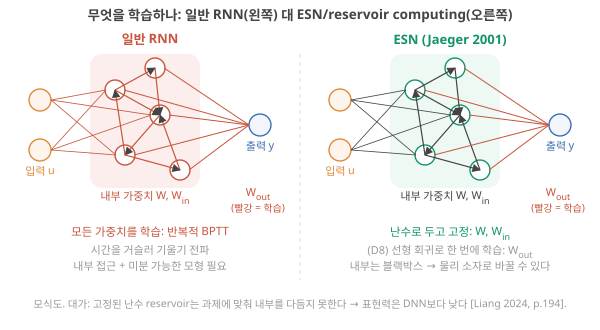
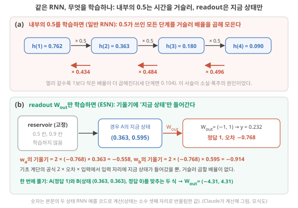
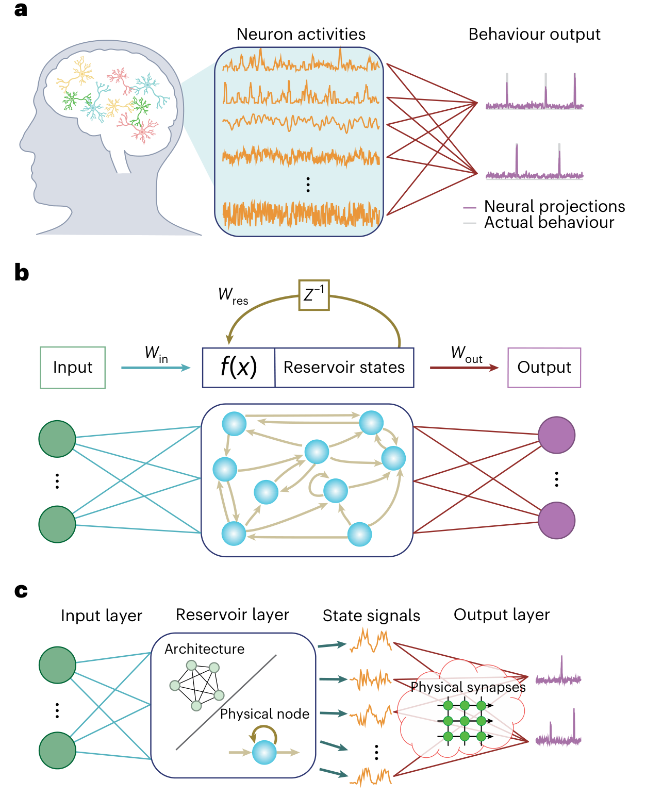
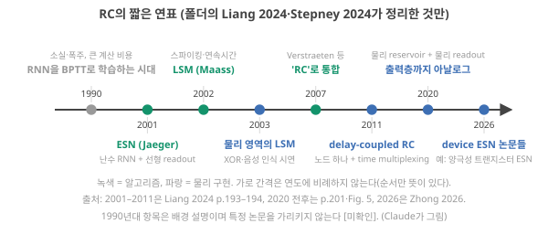
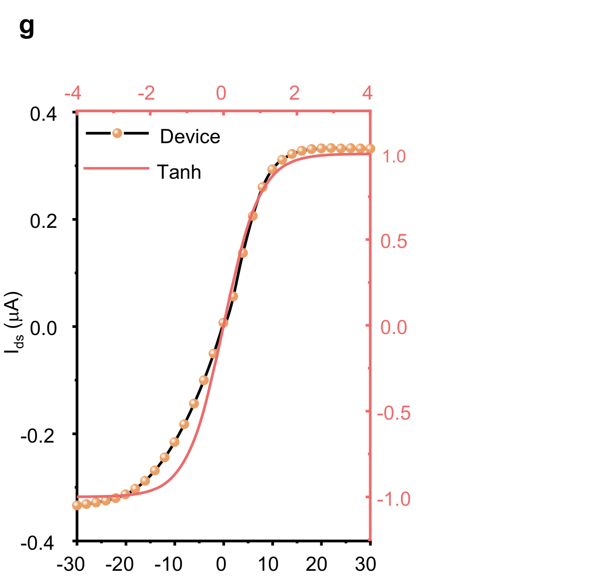
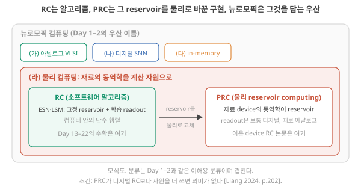

D7. RC란 무엇이고 어떤 문제를 풀려고 나왔나? 뉴로모픽과 어떤 관계인가?
Phase 2 · RC는 왜, 어떻게 작동하는가 · 10월 30일 (금)
답에 들어가야 할 것 — RNN 학습의 난점(BPTT, gradient 소실·폭주), ESN과 LSM의 탄생 배경
기본 경로: ① 사전 테스트(권장) → ② 학습자료(구간마다 잠깐 점검까지) → ③ 백지 회상 → ④ 가르치듯 내 답. ⓪·⑤와 접힌 '심화'·'추가 연습'은 선택입니다. 한 번에 끝낼 필요 없이 구간 단위로 나눠 읽어도 되고, 다시 열면 '지난번 읽던 곳' 링크가 뜹니다.
① 사전 테스트와 먼저 만들어 보기
아직 배우지 않은 내용을 먼저 풀어 봅니다. 많이 틀리는 것이 정상이고, 그게 목적입니다. 먼저 답해 본 문제는 읽을 때 눈에 들어오고 더 오래 남습니다. 문제마다 정답만 보이고, 이유는 학습자료와 ⑤ 다시 풀기에서 봅니다. 다 풀면 학습자료가 열립니다. 건너뛰려면 학습자료 위의 '그냥 읽기'를 누르세요(권장 단계일 뿐 필수는 아닙니다).
② 학습자료
오늘의 연구 질문 — 내 이온 소자의 '서서히 잊는 응답'을 시계열 계산에 쓰려면, 왜 소자 내부를 학습시키지 않고 출력층(readout)만 학습하는 방식(reservoir computing)이 필요하고, 그 방식은 소자에 무엇을 요구하나?
필요한 개념 (★ = 오늘 처음)
- 가중치와 2×2 행렬–벡터 곱(D2 3구간), LIF의 유지 계수 \(0.9 = e^{-\Delta t/\tau}\)(D3 2-3), readout·held-out·기준선(D6 기초 3–4) — 처음 쓰는 자리에서 한두 줄로 다시 말합니다
- ★ 모델·손실·기울기·학습률·epoch, 연쇄 법칙과 역전파 — 가중치 하나짜리 예(입력 2, 정답 5)로 (0구간)
- ★ 순환 신경망(RNN)과 은닉 상태 — 작은 예 \(h(t+1) = \tanh(0.5\,h(t) + u(t))\) 하나를 3구간까지 계속 씁니다 (1구간)
- ★ 시간 역전파(BPTT), 기울기 소실·폭주 (2구간)
- ★ reservoir·echo·readout·washout, ESN·LSM (3구간)
- ★ 물리 reservoir computing(PRC)과 기판의 요구 조건 (4–5구간)
끝나면 내 말로 설명할 수 있어야 하는 것
- 그림 1을 짚으며 \(w = 1.0\)에서 기울기 −12가 무슨 뜻이고 한 걸음 뒤 \(w\)가 왜 1.6이 되는지 말하고, 새 데이터(입력 1, 정답 3)로 한 걸음을 직접 계산할 수 있다.
- 그림 5를 따라 1구간 예의 기울기가 거슬러 갈수록 왜 작아지는지(0.434 × 0.484 × 0.496 ≈ 0.104) 말하고, 0.5 자리에 D3의 0.9를 넣으면 어떻게 달라질지 예측할 수 있다.
- 그림 8을 짚으며 readout만 학습하면 왜 시간을 거슬러 갈 필요가 없는지 말하고, 새 소자를 볼 때 "읽을 수 있는 상태가 몇 개이고, 그 기억이 입력의 시간척도와 맞는가"를 물을 수 있다.
나중에 쓰이는 곳 — D8(readout을 선형 회귀로 한 번에 풀기), D9(fading memory·echo state property·washout·spectral radius), D12(ESN 실습), D13–D16(소자의 시간척도·벤치마크·기준선 평가), D17(시스템 비용). 이온 소자 판단으로는 "내 소자의 이완과 비선형 응답이 reservoir의 재료가 될 수 있나"(아직 가설, D9–D16에서 시험)와 "학습을 소자 안이 아니라 readout에서 하면 소자에 무엇이 덜 요구되나"(D4의 갱신 선형성·대칭성 같은 학습용 사양)에 쓰입니다.
오늘의 질문 "RC란 무엇이고 어떤 문제를 풀려고 나왔나? 뉴로모픽과 어떤 관계인가?"는 다섯 개의 작은 질문으로 나뉩니다. 앞을 알아야 뒤가 읽히니 순서대로 가세요. 특히 0번은 "신경망을 학습시킨다"는 말을 처음 듣는 사람을 위한 계단입니다. 이미 아는 사람에게는 복습이지만, 2구간의 "같은 인자가 k번 곱해진다"는 문장은 0번 없이는 읽히지 않습니다.
- 신경망의 '모델·가중치·학습·기울기·역전파'는 각각 무슨 뜻인가? (숫자 하나짜리 예로)
- 시계열을 다루는 신경망(RNN)은 무엇이고, 왜 학습시키기 어려운가?
- ESN(2001)과 LSM(2002)은 무엇을 포기해서 그 어려움을 피했나?
- 그 둘이 왜 'reservoir computing'이라는 하나의 이름이 됐고, 왜 물리 소자로 옮기기 좋은가?
- 물리 reservoir computing(PRC)은 D1의 네 줄기(와 회색지대) 중 어디에 있고, 무엇을 약속하고 무엇을 약속하지 않나?
0. 기초 계단: 모델, 가중치, 학습, 기울기, 역전파
이 구간을 읽고 나면 "모델이 무엇이고, 학습이 무엇을 고치는 일이며, 기울기가 왜 '어느 쪽으로 옮길지'를 알려 주고, 역전파에서 왜 기울기들이 곱해지는지"를 숫자 하나짜리 예로 직접 계산하며 말할 수 있다.
오늘의 본론은 "RNN은 왜 학습이 어렵고, RC는 그 어려움을 어떻게 피했나"입니다. 그런데 이 문장에는 '학습', '기울기', '역전파'라는 말이 들어 있고, 셋 다 처음 듣는 사람에게는 뜻이 없는 단어입니다. 이 구간은 신경망의 수학 전체가 아니라, 오늘 필요한 네 가지만 작은 숫자로 다룹니다. 모델이 무엇인지, 학습이 무엇인지, 기울기가 무엇인지, 역전파가 무엇인지. 네 가지 모두 숫자 하나짜리 모델로 손 계산이 됩니다.
모델: 입력을 받아 가중치를 곱해 출력을 내는 규칙
온실에 온도 센서가 하나 있다고 합시다. 기준보다 온도가 얼마나 높은지를 \(u\)(단위 °C)라고 하고, 이 값으로 경보 점수 \(y\)를 만들려 합니다. 가장 단순한 규칙은 "온도 편차에 어떤 숫자를 곱한다"입니다.
\[ y = w \times u \]
\(w = 1.5\)로 정해 두고 온도 편차 \(u = 2\) °C가 들어오면 \(y = 1.5 \times 2 = 3\)점입니다. 이 규칙 전체, 즉 "숫자를 받아서 정해진 방식으로 다른 숫자를 내는 것"을 모델(model)이라고 부릅니다. 들어오는 숫자 \(u\)가 입력(input), 나오는 숫자 \(y\)가 출력(output), 그리고 모델이 안에 들고 있는 숫자 \(w\)가 가중치(weight)입니다. 가중치는 "입력을 얼마나 중요하게 볼지"를 정하는 숫자이고, 모델이 하는 일은 결국 가중치를 곱하는 것입니다. 수학에서는 "입력을 넣으면 출력이 하나로 정해지는 규칙"을 함수라고 부르는데, 모델도 함수입니다. 2를 넣으면 3이 나오고, 4를 넣으면 6이 나옵니다.
신경망(neural network)은 이런 "곱해서 더하는" 규칙을 수백만 개 이어 붙이고, 그 사이사이에 S자 모양의 함수를 끼워 넣은 큰 모델입니다(S자 함수가 무엇이고 왜 끼우는지는 이 구간 끝 역전파 상자에서 숫자로 봅니다). 아래에서 두 개를 이어 붙인 예가 나오고, 그보다 큰 것은 구조가 같을 뿐입니다.
입력이 여럿이면: 벡터, 행렬, 가중치 행렬
짧은 복습. 벡터는 숫자 목록, 행렬은 숫자 표이고, 행렬–벡터 곱은 "행 하나와 입력을 같은 자리끼리 곱해 더하면 출력 하나"입니다. 예: D2의 2×2 예에서 가중치 행 1이 \((1, 3)\)이고 입력이 \((2, 1)\)이면 출력 하나는 \(1\times2 + 3\times1 = 5\)입니다. 행이 둘이면 출력도 둘이고, 행마다 같은 계산을 합니다. '\(N\times N\) 행렬'은 '행 \(N\)개, 열 \(N\)개인 표'(행 수 × 열 수)라는 뜻입니다. 오늘 식의 \(W\,h(t)\)가 바로 이 계산이고, 1구간에서 상태 두 개짜리 예로 직접 해 봅니다. 처음 설명은 D1 기초: 벡터·행렬과 D4 기초 1에 있습니다.
벡터·행렬 설명 다시 펼치기 (D2의 2×2 예로 출력 두 개 계산)
센서가 둘(온도 편차 \(u_1\), 습도 편차 \(u_2\))이고 출력도 둘(경보 점수 \(y_1\), 환기 점수 \(y_2\))이라면, 출력마다 가중치가 입력 수만큼 필요합니다. 숫자를 순서대로 나열한 목록 \((u_1, u_2)\)를 벡터라 부르고, 가중치를 행(가로줄)·열(세로줄)로 배열한 표를 행렬이라 부르며, 표 안의 숫자 하나하나를 원소라고 합니다. 규칙은 하나입니다. 행 하나가 출력 하나의 가중치 목록이고, 출력은 "행과 입력을 같은 자리끼리 곱해서 더한 것"입니다. 입력 \(\mathbf{u} = (2, 1)\)에 행렬 \(W\)의 행 1이 \((1, 3)\), 행 2가 \((2, 0.5)\)라면
- \(y_1 = 1 \times 2 + 3 \times 1 = 2 + 3 = 5\)
- \(y_2 = 2 \times 2 + 0.5 \times 1 = 4 + 0.5 = 4.5\)
이 계산을 \(\mathbf{y} = W\mathbf{u}\)로 줄여 씁니다. 1구간의 RNN 식에 나오는 \(W\,h(t)\)가 바로 이것입니다. 상태 \(h(t)\)가 숫자 목록이고, \(W\)가 그 목록에 곱하는 가중치 표입니다. 이 구간에서는 숫자 하나짜리 모델(\(w\) 하나)로 모든 것을 설명하고, 여러 개가 되어도 "곱해서 더한다"가 반복될 뿐이라는 것만 기억하면 됩니다. (행렬 계산을 더 자세히 따라가고 싶으면 D2 3구간에 같은 예가 단계별로 있습니다. 보충이며 오늘 필수는 아닙니다.)
학습: 가중치를 데이터에 맞게 고치기, 그리고 오차와 손실
위의 \(w = 1.5\)는 누가 정했을까요. 아무도 모릅니다. 그래서 데이터로 정합니다. 과거 기록에 "온도 편차 2 °C였던 날, 경보 점수는 5점이 맞았다"가 있다고 합시다. 즉 입력 2에 대한 정답이 5입니다. 지금 모델의 가중치가 \(w = 1.0\)이면 출력은 \(y = 1.0 \times 2 = 2\)이고, 정답 5와 다릅니다.
이 차이를 오차(error)라 하고 \(y - \text{정답} = 2 - 5 = -3\)으로 적습니다. 오차에는 부호가 있어서(모자라면 음수, 넘치면 양수) 그대로 "얼마나 틀렸나"의 크기로 쓰기 불편합니다. 그래서 제곱합니다. \((-3)^2 = 9\). 이 값을 손실(loss)이라 하고 \(L\)로 적습니다.
\[ L = (y - \text{정답})^2 \]
- 왜 지금 필요한가: "얼마나 틀렸나"를 부호 없는 숫자 하나로 만들어야 "줄인다"는 말을 할 수 있다.
- 기호: \(y\)는 모델 출력, 정답은 데이터가 준 값. 데이터가 여러 개면 각각의 손실을 더하거나 평균한다.
- 단위: 출력 단위의 제곱(점²). 신경망에서는 보통 무차원.
- 계산 순서: 출력을 구한다 → 정답을 뺀다 → 제곱한다.
- 결과의 뜻: 0이면 딱 맞음. 클수록 많이 틀림. 제곱이라 큰 오차 하나가 작은 오차 여럿보다 훨씬 크게 센다.
학습(training)이란 손실이 가장 작아지는 가중치를 데이터로 찾아내는 일입니다. 이 예에서는 답이 보입니다. \(w = 2.5\)면 \(y = 5\), 손실 0. 하지만 가중치가 100만 개면 눈으로 찾을 수 없습니다. 그래서 신경망은 다른 방법을 씁니다. "지금 \(w\)에서 어느 쪽으로 조금 움직이면 손실이 주는가"만 알아내서 그쪽으로 조금 옮기고, 이것을 수천 번 반복합니다. 그 "어느 쪽으로, 얼마나 민감하게"를 알려 주는 숫자가 다음의 기울기입니다.
"조금 바꾸면 얼마나 변하나": 기울기
손실 \(L\)은 \(w\)에 따라 달라지므로, \(w\)를 넣으면 \(L\)이 나오는 함수 \(L(w)\)입니다. 먼저 그림으로 봅니다. \(w\)를 0부터 5까지 바꿔 가며 손실(입력 2, 정답 5)을 계산해 이으면 그림 1의 골짜기가 됩니다.
그림 읽는 법. 가로축은 가중치 \(w\)(단위 없음), 세로축은 손실 \(L\)(오차의 제곱)입니다. 검은 곡선의 높이가 그 \(w\)에서의 손실이고, 오른쪽 표는 곡선 위 몇 점의 숫자입니다. 지금은 세 가지만 확인하세요. ① \(w = 1.0\)(빨간 점)에서 손실 9, ② 가장 낮은 곳(초록 점)은 \(w = 2.5\)에서 손실 0, ③ 빨간 점 근처의 곡선은 오른쪽 아래로 기울어 있다. 점선과 짧은 화살표는 바로 아래에서 계산할 '기울기'와 '옮길 방향'입니다.

이제 이 함수에게 묻습니다. \(w\)를 조금 올리면 \(L\)은 얼마나 변하나? 직접 해 봅니다(입력 2, 정답 5).
| \(w\) | \(y = w \times 2\) | 오차 \(y - 5\) | 손실 \(L\) | \(L\)의 변화 | 변화 ÷ \(w\)의 변화 |
|---|---|---|---|---|---|
| 1.0 | 2.0 | −3.0 | 9 | — | — |
| 1.1 | 2.2 | −2.8 | 7.84 | −1.16 (0.1만큼 올려서) | −1.16 ÷ 0.1 = −11.6 |
| 1.01 | 2.02 | −2.98 | 8.8804 | −0.1196 (0.01만큼 올려서) | −0.1196 ÷ 0.01 = −11.96 |
\(w\)를 0.1 올리면 \(L\)이 1.16 줄고, 0.01 올리면 0.1196 줍니다. "변화 ÷ 변화"의 비율이 −11.6, −11.96으로 어떤 값에 가까워집니다. 올리는 양을 한없이 작게 하면 이 비율은 정확히 −12가 되고, 이 극한의 비율을 \(w = 1.0\)에서의 기울기(gradient)라고 부릅니다(수학에서는 미분값(derivative)이라고도 하며, 기호로 \(dL/dw\)라고 씁니다). 그림 1에서는 빨간 점에 닿은 점선(접선)의 기울어짐이 이 −12이고, 오른쪽 아래로 기울었으니 음수입니다.
이 모델에서는 기울기를 공식으로도 쓸 수 있습니다.
\[ \frac{dL}{dw} = 2 \times (y - \text{정답}) \times u \]
- 왜 지금 필요한가: 표를 매번 만들지 않고 기울기를 바로 계산하기 위해. 신경망은 이런 공식을 모든 가중치에 대해 자동으로 만든다.
- 기호: \(y - \text{정답}\)은 오차, \(u\)는 입력. 앞의 2는 제곱에서 나오는 수(아래 심화 상자에서 확인. 오늘은 공식을 쓸 줄만 알면 됩니다).
- 단위: 손실 단위 ÷ 가중치 단위.
- 계산 순서: 오차를 구한다(−3) → 2배 한다(−6) → 입력을 곱한다(−6 × 2 = −12).
- 결과의 뜻: "\(w\)를 아주 조금(\(\delta\)) 올리면 \(L\)은 약 \(-12\delta\)만큼, 즉 12배 빠르게 준다." 부호가 방향, 크기가 민감도다.
심화 · 공식의 2 × 오차 × 입력은 어디서 나오나 (제곱을 펼쳐 표와 맞추기)
\(\delta\)(델타)는 '아주 작은 양'을 뜻하는 기호입니다. \(w\)를 \(\delta\)만큼 올리면 출력은 \(u\delta = 2\delta\)만큼 오르고, 오차는 \(-3\)에서 \(-3 + 2\delta\)가 됩니다. 손실은 그 제곱이니 펼치면 \((-3 + 2\delta)^2 = 9 - 12\delta + 4\delta^2\). \(\delta = 0.1\)을 넣으면 \(9 - 1.2 + 0.04 = 7.84\)로 표와 같습니다. 손실의 변화 \(-12\delta + 4\delta^2\)를 \(\delta\)로 나누면 \(-12 + 4\delta\)이고, \(\delta\)를 0.1, 0.01로 줄이면 \(4\delta\) 부분이 0.4, 0.04로 줄어 비율이 \(-12\)에 다가갑니다(표의 −11.6 = −12 + 0.4, −11.96 = −12 + 0.04). 일반적으로 오차를 \(e\), 입력을 \(u\)라 하면 \((e + u\delta)^2 = e^2 + 2eu\delta + u^2\delta^2\)이므로 비율은 \(2 \times e \times u\)로 다가갑니다. 이것이 위 공식이고, 앞의 2는 제곱을 펼칠 때 가운데 항에서 나옵니다.
기울기의 반대쪽으로 한 걸음. 기울기가 음수라는 것은 "\(w\)를 올리면 \(L\)이 준다"는 뜻이므로 올려야 하고, 양수면 내려야 합니다. 즉 기울기의 부호와 반대쪽으로 옮깁니다. 얼마나 옮기나는 "보폭 × 기울기"로 정합니다. 보폭을 학습률(learning rate, \(\eta\))이라 부르는 작은 수로 둡니다. 한 걸음을 실제로 계산해 봅니다.
단계 1 — 방향. \(w = 1.0\)에서 기울기는 −12. 음수이므로 \(w\)를 올려야 \(L\)이 줍니다. (그림 1의 빨간 화살표가 오른쪽을 향하는 이유.)
단계 2 — 보폭. 학습률 \(\eta = 0.05\)로 두면 옮기는 양은 \(-\eta \times \text{기울기} = -0.05 \times (-12) = +0.6\). 새 가중치는 \(w = 1.0 + 0.6 = 1.6\).
단계 3 — 확인. \(w = 1.6\)이면 \(y = 1.6 \times 2 = 3.2\), 오차 \(3.2 - 5 = -1.8\), 손실 \((-1.8)^2 = 3.24\). 손실이 9에서 3.24로 줄었습니다.
단계 4 — 반복. \(w = 1.6\)에서의 기울기는 \(2 \times (-1.8) \times 2 = -7.2\). 아직 음수이니 또 올립니다. \(w = 1.6 + 0.05 \times 7.2 = 1.96\), \(y = 3.92\), 손실 \((-1.08)^2 \approx 1.17\). 걸음을 거듭할수록 2.5에 다가가고, 가까워질수록 기울기가 작아져 걸음도 짧아집니다. 가중치가 100만 개여도 하는 일은 같습니다. 가중치마다 기울기를 구해 반대쪽으로 조금씩 옮깁니다. 이 절차를 경사 하강(gradient descent)이라고 부릅니다.
단계 5 — 보폭이 너무 크면. 같은 자리에서 \(\eta = 0.5\)로 두면 옮기는 양은 \(+6\), \(w = 7\), \(y = 14\), 손실 \((14 - 5)^2 = 81\). 9였던 손실이 81로 나빠집니다. 골짜기 바닥을 지나쳐 건너편 비탈로 튄 것입니다. "보폭 × 기울기"가 너무 크면 학습이 발산한다는 이 사실을 기억해 두세요. 2구간에서 기울기 자체가 수천 배로 커지는 일(폭주)이 왜 치명적인지가 여기서 보입니다.
일반식으로 쓰면 가중치 하나당
\[ w_{\text{새}} = w - \eta\,\frac{dL}{dw} \]
- 왜 지금 필요한가: 위 다섯 단계를 한 줄로. 신경망 학습의 거의 모든 방법이 이 식의 변형이다.
- 기호: \(\eta\)는 학습률(보폭, 무차원 또는 가중치 단위 ÷ 기울기 단위), \(dL/dw\)는 그 가중치의 기울기.
- 단위: 가중치 단위.
- 계산 순서: 기울기를 구한다 → 학습률을 곱한다 → 지금 값에서 뺀다(기울기의 반대쪽이므로).
- 결과의 뜻: 손실이 줄어드는 쪽으로 조금 옮긴 새 가중치. 한 번이 아니라 수천 번 반복한다.
데이터가 여럿이면: 한 바퀴 = epoch. 지금까지는 데이터가 하나(입력 2, 정답 5)였습니다. 실제로는 정답이 붙은 예가 여러 개입니다. 하나를 더 둡니다. 입력 1, 정답 2.5(이것도 \(w = 2.5\)면 딱 맞습니다). 가장 단순한 방법은 데이터를 하나씩 보며 위의 한 걸음을 옮기는 것입니다(\(\eta = 0.05\)).
| 걸음 | 쓰는 데이터 | 기울기 \(2 \times (y - \text{정답}) \times u\) | 새 \(w = w + 0.05 \times (-\text{기울기})\) |
|---|---|---|---|
| 1 | 입력 2, 정답 5 | \(2 \times (2.0 - 5) \times 2 = -12\) | \(1.0 + 0.6 = 1.6\) |
| 2 | 입력 1, 정답 2.5 | \(2 \times (1.6 - 2.5) \times 1 = -1.8\) | \(1.6 + 0.09 = 1.69\) |
| 3 | 입력 2, 정답 5 | \(2 \times (3.38 - 5) \times 2 = -6.48\) | \(1.69 + 0.324 = 2.014\) |
| 4 | 입력 1, 정답 2.5 | \(2 \times (2.014 - 2.5) \times 1 = -0.972\) | \(2.014 + 0.0486 \approx 2.063\) |
가진 데이터를 모두 한 번씩 써서 걸음을 옮기는 한 바퀴를 epoch(에포크)라 합니다. 위 표에서 1–2걸음이 첫 번째 epoch, 3–4걸음이 두 번째 epoch입니다. 데이터가 1,000개면 한 epoch는 (하나씩 옮길 때) 1,000걸음이고, 학습은 보통 여러 epoch를 돕니다. 몇 epoch를 돌지도 학습률처럼 사람이 고르는 설정입니다. D2의 배치(함께 처리하는 입력 벡터의 수)와는 다른 말입니다. 배치는 '한 번에 몇 개를 함께 보나', epoch는 '전체 데이터를 몇 바퀴 돌았나'입니다. 여러 데이터의 기울기를 평균해 한 걸음을 옮기는 방법도 있고, 그때도 전체를 한 번 다 쓰면 1 epoch입니다. 표의 숫자는 Claude 계산
여기까지: 그림 1에서 \(w = 1.0\)의 기울기 −12를 읽고, 기울기의 반대쪽으로 한 걸음(학습률 0.05 → \(w = 1.6\), 손실 9 → 3.24)과 데이터 두 개로 한 epoch를 계산할 수 있다. 다음: 학습률을 바꿔 보는 실험과 확인 문제.
직접 바꿔 보기: 걸음 크기와 손실
위 손계산과 같은 손실 \(L = (2w - 5)^2\)(입력 2, 목표 5)에서, 한 걸음 크기 η(학습률: 기울기에 곱해 실제로 움직일 양을 정하는 수)를 바꿔 봅니다. 먼저 예상을 고른 뒤 '한 걸음'을 여러 번 눌러 보세요.
교육용 모형입니다. 가중치 하나, 데이터 하나짜리 손실이라 실제 신경망 학습(가중치 수백만 개, 데이터 여러 개, 매 걸음 다른 표본)보다 훨씬 단순합니다. w는 −0.5–5.5, η는 0.01–0.3에서 고릅니다(단위 없음).
정적 예제. w = 1.0에서 시작해 다음 w = w − η × 기울기, 기울기 = 4(2w − 5).
| η | 지나온 w (5걸음) | 결과 |
|---|---|---|
| 0.05 | 1.0 → 1.6 → 1.96 → 2.176 → 2.306 → 2.383 | 바닥 2.5로 다가감 |
| 0.25 | 1.0 → 4.0 → 1.0 → 4.0 → 1.0 → 4.0 | 바닥을 사이에 두고 왔다 갔다 |
| 0.3 | 1.0 → 4.6 → −0.44 → 6.616 → −3.262 → 10.567 | 점점 멀어짐(발산) |
무슨 일이 있었나. 정적 예제의 '기울기 = 4(2w − 5)'는 위 공식 \(2 \times \text{오차} \times \text{입력}\)에 오차 \(2w - 5\), 입력 2를 넣은 것이고, \(4(2w-5) = 8(w - 2.5)\)로 고쳐 쓰면 '바닥(w = 2.5)까지의 거리 \((w - 2.5)\)의 8배'입니다. 그래서 한 걸음 가면 바닥까지의 거리는 \((w - 2.5) - \eta \times 8(w - 2.5) = (1 - 8\eta)(w - 2.5)\)가 됩니다. 즉 한 걸음마다 거리에 \((1 - 8\eta)\)가 곱해집니다(예: η = 0.05면 거리 −1.5가 0.6배인 −0.9로, w는 1.0 → 1.6). η = 0.05면 0.6배씩 줄어 바닥에 다가가고, η = 0.25면 −1배라 같은 높이에서 왔다 갔다 하고, η = 0.3이면 −1.4배라 점점 멀어집니다. 기울기는 방향(어느 쪽으로 가야 손실이 주나)과 가파른 정도를 알려 줄 뿐이고, 얼마나 갈지는 η가 정합니다. 너무 크면 골짜기를 건너뛰어 학습이 망가집니다. 이 숫자들은 이 한 가지 손실에 대한 Claude 계산이며, 다른 손실에서는 안전한 η의 범위가 다릅니다. '같은 수를 거듭 곱하면 1보다 작을 때 줄고, 1보다 클 때 커진다'는 이 모양은 2구간에서 걸음이 아니라 시간 단계마다 다시 나옵니다.
- w = 3.5에서 기울기는?
답
오차 2 × 3.5 − 5 = 2, 기울기 = 2 × 2 × 2 = +8. - η = 0.25로 w = 1.0에서 한 걸음 가면?
답
1.0 − 0.25 × (−12) = 4.0. 손실은 9로 그대로입니다.
위 모델(입력 2, 정답 5)에서 \(w = 1.0\), 학습률 \(\eta = 0.1\)로 한 걸음 가면 새 \(w\)는 얼마일까요? 손으로 먼저 계산하고 아래에서 확인하세요. 첫 문제는 본문 숫자의 확인, 둘째는 일부가 비어 있고, 셋째는 입력과 정답이 다른 새 문제입니다.
역전파: 가중치가 두 개 이어져 있으면 기울기는 '곱'이다
지금까지는 가중치가 하나였습니다. 신경망은 가중치가 이어져 있습니다. 가장 작은 예로 두 개를 잇습니다. 입력 \(u\)에 \(w_1\)을 곱해 중간 숫자 \(h\)를 만들고, 거기에 \(w_2\)를 곱해 출력 \(y\)를 만듭니다.
\[ h = w_1 \times u, \qquad y = w_2 \times h, \qquad L = (y - \text{정답})^2 \]
입력도 출력도 아닌 중간 숫자 \(h\)를 은닉(hidden) 값이라 부릅니다(바깥에서 안 보인다는 뜻일 뿐입니다). 숫자를 넣습니다. \(u = 2\), \(w_1 = 1.0\), \(w_2 = 0.5\), 정답 5. 앞으로 계산하면 \(h = 2\), \(y = 1\), 오차 \(-4\), 손실 16. 이렇게 입력에서 출력 쪽으로 계산해 가는 것을 순전파라고 합니다.
이제 학습을 하려면 \(w_1\)과 \(w_2\) 각각의 기울기가 필요합니다. \(w_2\)는 출력 바로 앞에 있어서 한 가중치짜리 예와 같습니다. \(w_1\)은 다릅니다. \(w_1\)을 바꾸면 \(h\)가 바뀌고, \(h\)가 바뀌어야 \(y\)가 바뀌고, \(y\)가 바뀌어야 \(L\)이 바뀝니다. 즉 \(w_1\)의 영향은 \(w_2\)라는 통로를 지나서야 손실에 닿습니다. 그림 2로 전체를 먼저 보고, 단계별로 따라갑니다.
그림 읽는 법. 그림 2의 위 줄은 방금 한 앞으로 계산(순전파)입니다. 가운데 빨간 상자 세 개는 위의 화살표 하나하나를 "앞의 값을 조금 바꾸면 뒤의 값이 몇 배로 변하나"라는 배율로 바꾼 것이고, 맨 아래 상자는 그 배율들을 곱한 결과입니다. 상자 안에는 기울기가 \(d\) 대신 \(\partial\)(둥근 d, '편미분 기호'라 부름)로 적혀 있습니다. 뜻은 같은 '조금 바꾸면 몇 배로 변하나'이고, 값이 여럿일 때 하나만 조금 바꾸고 나머지는 그대로 둔 채 잰 비율이라는 표시입니다. 예: \(\partial y/\partial h = w_2 = 0.5\)는 '\(w_2\)는 그대로 두고 \(h\)만 조금 바꾸면 \(y\)는 그 0.5배만큼 변한다'. 아래 단계 1–3이 빨간 상자를 오른쪽부터 하나씩 채우고, 단계 4가 맨 아래 곱을 숫자로 확인합니다.

단계 1 — 출력 쪽 배율(그림 2의 오른쪽 빨간 상자). 손실은 출력에 대해 얼마나 민감한가? \(y\)를 1에서 1.1로 올려 보면 오차는 \(-4\)에서 \(-3.9\), 손실은 16에서 15.21로 0.79 줄고, 0.1로 나누면 \(-7.9\)입니다. 올리는 양을 더 작게 하면 \(-8\)에 다가갑니다. 기울기 공식 \(2 \times \text{오차} \times \text{입력}\)에서 \(y\)를 직접 바꾸므로 '입력' 자리에 1을 넣은 것과 같아서 \(2 \times (-4) = -8\). "\(y\)를 조금 올리면 \(L\)은 그 8배로 준다."
단계 2 — \(w_2\)의 기울기(그림 2 맨 아래 첫 줄). \(y = w_2 \times h\)이므로 \(w_2\)를 조금 올리면 \(y\)는 그 \(h = 2\)배 오릅니다. 그러면 \(L\)은 그 \(-8\)배. 둘을 곱해 \(w_2\)의 기울기 \(= (-8) \times 2 = -16\).
단계 3 — \(w_1\)의 영향이 지나는 통로(가운데·왼쪽 빨간 상자). \(h = w_1 \times u\)이므로 \(w_1\)을 조금 올리면 \(h\)는 그 \(u = 2\)배 오릅니다. \(h\)가 오르면 \(y = w_2 \times h\)는 그 \(w_2 = 0.5\)배 오릅니다. \(y\)가 오르면 \(L\)은 그 \(-8\)배. 세 배율을 곱하면 \(w_1\)의 기울기 \(= 2 \times 0.5 \times (-8) = -8\).
단계 4 — 표로 확인. \(w_1\)을 1.0에서 1.1로 올리면 \(h = 2.2\), \(y = 1.1\), 오차 \(-3.9\), 손실 \(15.21\). 변화 \(-0.79\)를 0.1로 나누면 \(-7.9\). 공식의 \(-8\)과 맞습니다(0.1이 '한없이 작은' 양은 아니라 조금 다릅니다).
정리. 거쳐 가는 단계마다 "조금 바꾸면 그 몇 배로 변하나"라는 배율이 하나씩 있고, 앞쪽 가중치의 기울기는 그 배율들을 전부 곱한 것입니다. 이 규칙을 연쇄 법칙(chain rule)이라 하고, 출력 쪽에서 입력 쪽으로 배율을 거꾸로 곱해 내려오며 모든 가중치의 기울기를 한 번에 구하는 절차를 역전파(backpropagation)라고 합니다. 그림 2의 아래 두 줄이 이 계산입니다.
핵심 관찰 하나. \(w_2\)의 기울기에는 통로가 없었고(\(-8 \times 2\)), \(w_1\)의 기울기에는 통로 하나(\(w_2 = 0.5\))가 끼었습니다. 가중치가 셋 이어지면 맨 앞 가중치의 기울기에는 통로 둘이 곱해지고, 스무 개 이어지면 열아홉 개가 곱해집니다. 통로의 배율이 0.5 안팎이면 \(0.5^{19}\), 1.5 안팎이면 \(1.5^{19}\). 앞쪽 가중치의 기울기는 통로 배율의 거듭제곱으로 쪼그라들거나 터집니다. 2구간은 이 문장에 "RNN에서는 통로가 시간 단계마다 하나씩 생기고, 배율이 매번 같은 \(W\)"라는 말을 보태는 것뿐입니다.
여기까지: 그림 2의 세 배율(2, 0.5, −8)을 곱해 \(w_1\)의 기울기 −8을 구하고, 가중치가 길게 이어지면 통로의 배율이 거듭 곱해진다는 것을 말할 수 있다. 다음: 중간에 S자 함수 \(\tanh\)가 끼면 그 배율이 어떻게 바뀌나.
비선형 함수가 끼면: \(\tanh\).
왜 끼우나. 곱하기만 이어 붙이면 \(y = w_2 \times (w_1 \times u) = (w_2 w_1) \times u\)라서, 가중치를 몇 개 이어도 결국 '입력에 숫자 하나 곱하기'와 같습니다(\(w_1 = 1.0\), \(w_2 = 0.5\)인 위 사슬은 \(w = 0.5\) 하나짜리 모델과 똑같은 출력을 냅니다). "입력이 커질수록 출력이 덜 늘어난다"처럼 곱하기 하나로는 그릴 수 없는 관계를 만들려면 중간에 곡선 모양의 함수를 끼웁니다. 그래프가 직선이 아닌 함수를 비선형(nonlinear) 함수라 하고, 오늘 쓰는 것은 \(\tanh\)(쌍곡탄젠트, hyperbolic tangent)입니다. (비선형이 계산에 왜 꼭 필요한지는 D10의 주제입니다.)
\(\tanh(1) = 0.762\)입니다. 입력을 세 배로 늘린 \(\tanh(3)\)은 \(0.762 \times 3 = 2.29\)쯤일까요, 아니면 다른 값일까요? 먼저 정한 뒤 아래 숫자와 그림 3을 보세요.
그림 3의 왼쪽은 \(\tanh\) 곡선, 오른쪽은 그 곡선의 기울기입니다. 두 패널 모두 가로축은 \(\tanh\)에 들어가는 값 \(x\)이고, 왼쪽 세로축은 출력(−1과 1 사이), 오른쪽 세로축은 기울기(0과 1 사이)입니다.

어떻게 생겼나(그림 3 왼쪽). 입력 0에서 출력 0이고, 입력이 커지면 출력이 1에, 음수로 커지면 −1에 다가가는 S자 곡선입니다. 몇 점: \(\tanh(0) = 0\), \(\tanh(0.5) = 0.462\), \(\tanh(1) = 0.762\), \(\tanh(2) = 0.964\), \(\tanh(3) = 0.995\). 음수 입력은 부호만 바뀝니다(\(\tanh(-1) = -0.762\)). 0 근처에서는 거의 '입력 그대로'(\(\tanh(0.1) = 0.0997\))이고, 입력이 클수록 출력이 1에 눌려 거의 변하지 않습니다. 입력을 1에서 3으로 세 배 늘려도 출력은 0.762에서 0.995로 0.23만 늘고, 1을 넘지 못합니다. 이것을 포화(saturation)라고 합니다. 1구간의 예에 나오는 \(\tanh(0.381) = 0.363\)도 이 곡선 위의 한 점입니다.
입력을 조금 바꾸면 출력은 얼마나 변하나(그림 3 오른쪽). 기울기 상자와 같은 방법으로 잽니다. 입력 1에서 0.01 올리면 \(\tanh(1.01) - \tanh(1) = 0.76576 - 0.76159 = 0.00417\)이고, 0.01로 나누면 약 0.42입니다. 같은 계산을 하면 입력 0에서 약 1.00, 입력 2에서 약 0.07, 입력 3에서 약 0.01. 이 '함수 자체의 기울기'를 \(f'\)(에프 프라임)로 적습니다. \(\tanh\)의 기울기는 입력 0에서 가장 커서 1이고, 곡선이 평평해질수록(입력이 0에서 멀어질수록) 0에 가까워집니다. 공식으로는 \(f' = 1 - \tanh^2\)(입력 1이면 \(1 - 0.762^2 = 0.42\))입니다. 일반 수학 사실이며 폴더 논문의 내용은 아님
통로 배율이 어떻게 바뀌나. \(h = \tanh(w_1 u)\)이면, \(w_1\)을 조금 바꿀 때 \(h\)의 변화는 '\(\tanh\) 안에 들어가는 값(\(w_1 u\))의 변화 × 그 지점의 \(f'\)'입니다. 연쇄 법칙의 배율이 하나 더 끼는 것입니다. 마찬가지로 1구간의 RNN에서 한 상태가 다음 상태로 넘어가는 통로의 배율은 '가중치 × 그 지점에서의 \(f'\)'가 됩니다. \(\tanh\)의 \(f'\)는 0보다 크고 1 이하이므로 배율의 크기는 가중치의 크기를 넘지 못합니다. 기호로 \(|W \cdot f'| \le |W|\)이고, 세로 막대 \(|\;|\)는 부호를 떼고 크기만 본 값(절댓값)입니다. 2구간의 '인자 \(= W \cdot f'\)'가 이 뜻입니다.
역전파와 \(\tanh\)의 성질은 폴더 논문이 설명하지 않는 일반 교과 내용 시간 순서로 들어오는 신호를 다루는 신경망에서 역전파가 어떻게 되는지는 2구간에서 다룹니다.
- 모델 / 입력 / 출력 / 가중치
- 입력을 받아 출력을 내는 규칙 / 들어오는 숫자 / 나오는 숫자 / 모델이 들고 있는, 입력에 곱하는 숫자. \(y = w \times u\).
- 벡터 / 행렬 / 원소
- 숫자 목록 / 행·열로 배열한 숫자 표 / 표의 숫자 하나. 행 하나 = 출력 하나의 가중치 목록. \(\mathbf{y} = W\mathbf{u}\).
- 오차 / 손실
- 출력 − 정답 / 오차의 제곱(부호 없이, 큰 오차를 크게). 학습은 손실을 줄이는 일.
- 기울기 (gradient, 미분값)
- 가중치를 한없이 조금 바꿀 때 손실이 변하는 비율. 부호가 방향, 크기가 민감도. 예: \(w=1.0\)에서 −12.
- 경사 하강 / 학습률 / epoch
- \(w \leftarrow w - \eta \cdot dL/dw\)를 반복하기 / 보폭 \(\eta\). 너무 크면 골짜기를 지나쳐 손실이 커진다 / 가진 데이터를 모두 한 번씩 써서 걸음을 옮기는 한 바퀴.
- 은닉 / 순전파 / 역전파 / 연쇄 법칙
- 중간 숫자 / 입력에서 출력 쪽으로 계산 / 출력에서 입력 쪽으로 배율을 곱해 내려오며 기울기 구하기 / 거쳐 가는 단계의 배율을 곱한다는 규칙. \(\partial\)는 '하나만 조금 바꾸면 몇 배'를 적는 기호.
- 비선형 함수 / \(\tanh\) / \(f'\)
- 그래프가 직선이 아닌 함수 / 어떤 입력도 −1과 1 사이로 누르는 S자 함수(\(\tanh(1) = 0.762\)) / 함수 자체의 기울기. \(\tanh\)는 입력 0에서 1, 입력 2에서 0.07(포화할수록 작다).
- 모델 = 입력 × 가중치 → 출력. 학습 = 손실(오차²)이 줄도록 가중치를 데이터로 고치기. 예: 입력 2, 정답 5, \(w=1.0\)이면 손실 9.
- 기울기 = "조금 바꾸면 얼마나 변하나"의 극한 비율. \(w=1.0\)에서 −12. 기울기의 반대쪽으로 보폭만큼 옮기면 손실이 준다(9 → 3.24). 보폭이 너무 크면 나빠진다(9 → 81). 가진 데이터를 모두 한 번씩 쓰는 한 바퀴가 epoch(데이터 둘이면 1.0 → 1.6 → 1.69).
- 가중치가 이어져 있으면 앞쪽 가중치의 기울기는 통로 배율의 곱이다(연쇄 법칙·역전파): \(2 \times 0.5 \times (-8) = -8\). 통로가 \(k\)개면 배율이 \(k\)번 곱해진다.
- S자 함수 \(\tanh\)가 끼면 통로 배율은 '가중치 × \(f'\)'. \(f'\)는 입력 0에서 1, 입력 2에서 0.07로 1 이하라서 배율이 가중치보다 커지지 않는다.
- 남은 질문: 시간 순서로 들어오는 신호에는 어떤 모델을 쓰나? → 1구간. 그 모델에서 통로가 몇 개나 되나? → 2구간.
1. 시계열과 순환 신경망: 상태를 다음 단계로 넘긴다
이 구간을 읽고 나면 "RNN은 무엇(은닉 상태)을 다음 시간 단계로 넘기고, 왜 같은 가중치를 매 단계 다시 쓰는가"를 숫자 하나짜리 예(0.762 → 0.363 → …)로 말하고, 그 규칙이 D3 LIF의 0.9와 같은 꼴임을 짚을 수 있다.
직관. 사진 한 장을 보고 고양이인지 맞히는 신경망은 0구간의 모델처럼 입력 하나를 받아 출력 하나를 냅니다. 입력 → 중간(은닉) → 출력으로 한 방향으로만 흐르므로 피드포워드 신경망(feed-forward NN)이라 부르고, 입력과 출력 사이에 '시간'이 없습니다. 그런데 음성, 심전도, 센서 신호처럼 시간 순서로 들어오는 신호(시계열)는 지금 값만으로는 부족합니다. 방금 전까지 어떤 값이 왔는지가 있어야 합니다. 순환 신경망(recurrent neural network, RNN)은 이 '방금 전까지'를 숫자에 담아 다음 시간 단계로 넘깁니다. 그 숫자를 은닉 상태(hidden state) \(h(t)\)라 부릅니다. 0구간의 은닉 값처럼 출력이 아니라 안쪽에 있는 중간 숫자라는 뜻이고, 다른 점은 다음 시간 단계의 계산에 다시 들어간다는 것입니다(아래에서는 '상태'라고 줄여 씁니다). Stepney의 튜토리얼은 이것을 한 줄로 씁니다. RNN은 순환 연결을 통해 기억을 얻고, 그래서 시계열 예측과 분류에 쓸모가 있다. Stepney 2024, p.665
가장 작은 예부터. 상태가 숫자 하나뿐인 RNN을 손으로 돌려 봅니다. 규칙은 하나입니다.
\[ h(t+1) = \tanh\big(0.5\,h(t) + u(t)\big), \qquad h(0) = 0, \qquad \text{입력 } u = 1, 0, 0, 0 \]
읽는 법: 지금 상태 \(h(t)\)에 0.5를 곱하고, 지금 입력 \(u(t)\)를 더해, 0구간의 S자 함수 \(\tanh\)(그림 3)에 넣은 값이 다음 상태입니다. \(t\)는 시간 단계(정수, 샘플 번호)이고 값은 모두 단위가 없습니다.
같은 꼴을 D3에서 봤습니다. \(\tanh\)를 빼고 보면 \(h(t+1) = 0.5\,h(t) + u(t)\)로, D3 LIF의 규칙 \(u_{\text{다음}} = 0.9 \times u_{\text{지금}} + (\text{입력})\)과 같은 '이전 값의 일부를 남기고 새 입력을 더하는' 꼴입니다. 0.5는 이전 상태의 50%가 다음 단계에 남는 계수(한 단계에 50%씩 줄어듦)이고, D3의 0.9는 90%가 남는(한 단계에 10%씩 줄어드는) 계수입니다. 다른 점도 있습니다. D3의 0.9는 막의 시간상수 \(\tau\)와 계산 간격 \(\Delta t\)에서 정해지는 값(\(0.9 = e^{-\Delta t/\tau}\))이었지만, RNN의 0.5는 물리에서 온 값이 아니라 설계하거나 학습으로 정하는 가중치입니다.
\(h(1) = \tanh(1) = 0.762\)입니다. 다음 입력이 0이면 \(h(2) = \tanh(0.5 \times 0.762) = \tanh(0.381)\). 이 값은 0.381보다 클까요, 작을까요? 그림 3 왼쪽 곡선(0 근처에서는 거의 '입력 그대로', 0에서 멀어질수록 눌림)을 떠올려 먼저 정한 뒤 아래를 보세요.
그림 읽는 법. 그림 4는 같은 규칙을 시간 순서로 펼쳐 그린 것입니다. 주황 화살표는 그 단계의 입력, 파란 상자는 상태, 상자 사이의 검정 화살표 \(W\)는 '지금 상태에 곱하는 수'(이 예에서는 매번 같은 0.5), 상자 아래 빨간 숫자는 계산한 상태값입니다.

- \(h(1) = \tanh(0.5\cdot 0 + 1) = \tanh(1) = 0.762\)
- \(h(2) = \tanh(0.5\cdot 0.762 + 0) = \tanh(0.381) = 0.363\) (0.381보다 조금 작습니다. \(\tanh\)는 0이 아닌 값을 조금씩 눌러 줍니다)
- \(h(3) = \tanh(0.5\cdot 0.363) = \tanh(0.182) = 0.180\)
- \(h(4) = \tanh(0.090) = 0.090\)
입력 1이 한 번 들어간 뒤 0만 들어와도 상태는 0.762 → 0.363 → 0.180 → 0.090으로 흔적을 남기며 줄어듭니다. 이것이 "상태가 기억을 담는다"는 말의 가장 작은 형태이고, 줄어드는 속도는 \(W\)(여기서는 0.5)가 정합니다. D9의 fading memory(입력의 흔적이 시간이 지나며 서서히 사라지는 성질)가 여기서 시작됩니다.
여기까지: 그림 4를 따라 0.762 → 0.363 → 0.180 → 0.090을 계산하고, 0.5가 D3의 0.9처럼 '이전 상태의 몇 %가 남나'를 정하는 수라는 것을 말할 수 있다. 다음: 상태가 여럿일 때의 일반식과 두 상태 예.
일반식: 상태가 여럿이면. 실제 RNN의 상태는 숫자 하나가 아니라 여러 개의 목록이고, 가중치도 표입니다. 변수와 단위. 시간 단계 \(t\) (정수, 샘플 번호), 입력 \(u(t)\) (예: 전압 [V], 또는 −1~1 범위로 맞춘 무차원 값. 이렇게 범위를 맞추는 것을 정규화(normalization)라 부릅니다), 상태 \(h(t)\) (\(N\)개의 숫자를 묶은 벡터, 무차원), 가중치 행렬 \(W\) (\(N\times N\): 행 \(N\)개·열 \(N\)개인 표, 상태에 곱함)와 \(W_{in}\) (\(N\times N_u\), \(N_u\)는 입력 신호의 개수; 입력에 곱함), 비선형 함수 \(f\) (보통 0구간 끝에서 본 \(\tanh\)). 상태 갱신은
\[ h(t+1) = f\big(W\,h(t) + W_{in}\,u(t)\big) \]
- 왜 지금 필요한가: "상태를 다음 단계로 넘긴다"를 식으로 적어야 2구간에서 통로가 몇 개인지 셀 수 있다.
- 기호: \(W\,h(t)\)는 지금 상태에 가중치 표를 곱한 것, \(W_{in}\,u(t)\)는 지금 입력에 가중치를 곱한 것. 둘을 더해 S자 함수 \(f\)에 넣은 결과가 다음 상태.
- 단위: 상태와 가중치는 무차원.
- 계산 순서: 지금 상태와 입력에 각각 가중치를 곱해 더한다 → \(f\)를 통과시킨다 → 다음 상태로 저장한다 → 다음 입력으로 반복.
- 결과의 뜻: 다음 상태는 "지금 입력 + 지금 상태의 흔적"이다.
핵심은 같은 \(W\)를 매 단계 다시 쓴다는 것입니다. 시간으로 펼쳐 그리면(그림 4) 같은 상자가 줄지어 있고, 상자 사이를 잇는 화살표가 모두 같은 \(W\)입니다.
상태가 둘이면: 행렬–벡터 곱을 한 번 써 보기. 실제 RNN의 \(W\,h(t)\)는 행렬–벡터 곱입니다. 상태 두 개 \(h = (h_a, h_b)\), \(W\)의 행 1 = \((0.5,\ 0)\), 행 2 = \((0,\ 0.9)\)(둘째 칸의 0.9는 D3 LIF와 같은 유지 계수, 곧 90%가 남는 칸), \(W_{in} = (1, 1)\)(입력 하나를 두 상태에 똑같이 넣음), 입력은 위와 같은 1, 0, 0으로 둡니다.
두 번째 상태(\(W\)의 행 2에 0.9가 있는 칸)는 첫 번째 상태보다 빨리 줄어들까요, 천천히 줄어들까요? 먼저 정한 뒤 단계를 넘기세요.
단계 1 — 첫 입력. \(h(0) = (0, 0)\)이므로 \(W h(0) = (0, 0)\). 입력 쪽은 \(W_{in} \times 1 = (1, 1)\). 더하면 \((1, 1)\), 칸마다 \(\tanh\)를 씌우면 \(h(1) = (0.762,\ 0.762)\).
단계 2 — 행렬–벡터 곱. \(W h(1)\)의 첫 칸 = 행 1과 상태를 같은 자리끼리 곱해 더하기 \(= 0.5 \times 0.762 + 0 \times 0.762 = 0.381\), 둘째 칸 = 행 2로 \(0 \times 0.762 + 0.9 \times 0.762 = 0.685\). 입력이 0이라 더할 것이 없고, \(\tanh\)를 씌우면 \(h(2) = (0.363,\ 0.595)\).
단계 3 — 한 번 더. \(W h(2) = (0.5 \times 0.363,\ 0.9 \times 0.595) = (0.182,\ 0.536)\), \(\tanh\)를 씌우면 \(h(3) = (0.180,\ 0.490)\).
정리. 첫 번째 칸은 위의 1차원 예와 똑같이 빨리 줄고(0.762 → 0.363 → 0.180), 두 번째 칸은 천천히 줄어(0.762 → 0.595 → 0.490) 더 오래 기억합니다. 상태 목록 하나에 '빨리 잊는 칸'과 '천천히 잊는 칸'이 함께 들어 있다는 것이 3구간에서 쓸모를 냅니다. 이 \(W\)는 대각선 밖이 0이라 두 칸이 서로 섞이지 않는 가장 단순한 경우입니다. 실제 RNN의 \(W\)는 대부분의 칸이 0이 아니어서, 한 상태가 다른 상태의 다음 값에도 영향을 줍니다.
적용 조건. 위 식은 모형입니다. 실제 신경망은 \(N\)이 수백에서 수천이고 \(W\)는 행렬이지만, "상태를 넘기고 같은 \(W\)를 반복해서 쓴다"는 구조는 같습니다. 물리 소자에서는 \(h(t)\)가 전도도나 전하 같은 물리량이 되고, \(W\)는 소자의 동역학이 대신합니다(D8–D9).
- 시계열 (time series)
- 시간 순서로 들어오는 값의 나열. '지금 값'만으로는 부족하고 '방금 전까지'가 있어야 처리할 수 있는 신호. D1 (라)에서 한 번 나왔다.
- 피드포워드 신경망 (feed-forward NN)
- 입력 → 은닉층 → 출력으로 한 방향으로만 흐르는 신경망. 내부 상태가 없어 입력 하나에 출력 하나. 학습 알고리즘(역전파)이 잘 정립되어 있다 Stepney 2024, p.665.
- 은닉 상태 (hidden state)
- RNN이 다음 시간 단계로 넘기는 안쪽 숫자(목록) \(h(t)\). 출력이 아니라 중간 값이고, '방금 전까지'의 흔적을 담는다. 이 글에서는 '상태'라고 줄여 쓴다.
- 순환 신경망 (RNN)
- 상태 \(h(t)\)를 다음 단계로 넘기는 신경망. 같은 \(W\)를 매 단계 다시 쓴다. 시간을 펼치면 깊이가 시간 길이만큼인 네트워크가 된다.
- 가중치 (weight)
- 신경망의 조절 가능한 숫자. 학습이란 이 숫자들을 오차가 줄어드는 쪽으로 바꾸는 일이다(0구간).
1차원 예시에서 0.5를 1.2로 바꾸면 \(h\)는 어떻게 될까요? 입력이 0이어도 상태가 줄지 않거나 커질 수 있습니다(단, \(\tanh\) 때문에 1을 넘지는 못합니다). "기억이 안 사라지는 것"이 좋은 일일까요? 답은 D9에서 숫자로 확인하니, 지금은 직감만 적어 두세요.
- RNN은 상태 \(h(t)\)를 다음 단계로 넘겨 시계열의 '방금 전까지'를 담는다 Stepney 2024, p.665.
- 같은 \(W\)를 매 단계 다시 쓴다. 1차원 예시: 입력 1 뒤에 0만 와도 0.762 → 0.363 → 0.180으로 흔적이 남으며 줄어든다.
- 줄어드는 속도는 \(W\)가 정한다. 1차원 예의 0.5는 이전 상태의 50%가 남는 계수로, D3 LIF의 0.9(90%가 남음)와 같은 꼴이다. 단 RNN의 0.5는 물리 시간상수가 아니라 가중치다. 이것이 D9 fading memory의 씨앗이다.
- 남은 질문: 이 구조를 어떻게 학습시키나? 왜 어렵나?
2. 왜 RNN 학습은 어려운가: 시간을 거슬러 올라가는 기울기
이 구간을 읽고 나면 "RNN을 시간으로 펼치면 0구간의 사슬이 시간 길이만큼 길어지고, 통로의 배율이 매번 같은 \(W\)라서 \(k\)단계 전의 기울기에 같은 인자가 \(k\)번 곱해진다"를 \(0.5^{20}\), \(1.5^{20}\)이라는 숫자와 함께 말할 수 있고, 물리 소자에는 벽이 하나 더 있음을 안다.
2-1. 학습이란 무엇인가 (0구간 되짚기)
신경망을 '학습시킨다'는 것은 출력과 정답의 차이(오차)를 제곱한 손실을 재고, 손실이 줄어드는 방향으로 가중치를 조금씩 바꾸는 일을 수천 번 반복하는 것입니다. 어느 방향으로 바꿔야 손실이 주는지를 알려 주는 양이 기울기입니다. "이 가중치를 아주 조금 올리면 손실이 얼마나 변하나"를 모든 가중치에 대해 계산한 것입니다.
피드포워드 신경망에서는 출력 쪽 층부터 입력 쪽 층으로 거꾸로 내려오며 기울기를 계산합니다(역전파). 각 층을 지날 때마다 연쇄 법칙으로 "앞 층의 변화가 뒤 층에 얼마나 전해지나"라는 배율을 곱해 나갑니다. 0구간의 두 단계 사슬에서 \(2 \times 0.5 \times (-8)\)이 그것이었습니다. 역전파 자체는 폴더 논문이 설명하지 않는 일반 교과 내용 RNN에서는 이 '거꾸로 곱해 내려오기'를 시간 축을 따라 해야 합니다. 2-2에서 1구간의 예로 봅니다.
2-2. RNN에서는 시간이 깊이가 된다
직관. 그림 4처럼 RNN을 시간으로 펼치면, 시간 길이가 \(T\)인 신호에 대해 깊이가 \(T\)인 네트워크가 됩니다. 0구간의 사슬은 입력 → 은닉 → 출력의 두 단계였지만, 펼친 RNN은 \(h(1) \to h(2) \to \cdots \to h(T)\)로 시간 단계마다 통로가 하나씩 생깁니다. 시간 단계 \(t\)에서 생긴 오차를 \(W\) 탓으로 돌리려면, \(W\)가 \(t-1, t-2, \dots\) 단계에서도 쓰였으므로 시간을 거슬러 모든 단계를 지나며 기울기를 모아야 합니다. 이렇게 시간을 거슬러 올라가며 하는 역전파를 시간 역전파(backpropagation through time, BPTT)라 부릅니다. Stepney는 피드포워드 신경망의 학습 알고리즘으로 역전파를 들고, RNN의 표준 학습 알고리즘인 BPTT는 계산량이 더 크다고 쓰고 Stepney 2024, p.665, 그 까닭을 "순환을 시간 역전파로 풀어헤쳐야(unwinding) 하기 때문에 반복적 역전파로 RNN을 학습시키는 것은 비싸다"고 씁니다. Stepney 2024, p.669
변수와 단위. 묻는 양은 "\(k\)단계 전의 상태 \(h(t-k)\)를 조금 바꾸면 지금 상태 \(h(t)\)가 몇 배로 변하나"입니다. 0구간의 표기로 \(\partial h(t)/\partial h(t-k)\)(무차원)이고, 연쇄 법칙에 따라 한 단계짜리 통로의 배율 \(k\)개를 곱한 것입니다. 1차원 예시에서는 각 배율이 \(W\cdot f'\)(가중치 × \(\tanh\)의 기울기, 0구간 끝의 그림 3)입니다. 상태가 여럿일 때의 배율은 아래 '상태가 여럿이면'에서 봅니다.
0구간과 다른 점은 딱 하나입니다. 피드포워드에서는 통로마다 가중치가 다를 수 있지만(\(w_1, w_2, \dots\)), RNN에서는 통로의 배율이 매번 같은 \(W\)입니다. 그래서 곱이 "서로 다른 수 \(k\)개의 곱"이 아니라 "같은 수의 \(k\)제곱"이 됩니다. 1차원 예시로 세어 봅니다.
그림 읽는 법. 그림 5는 그림 4의 네 상자를 그대로 두고 그 아래에 거꾸로 가는 빨간 화살표를 그린 것입니다. ① 위의 파란 상자: 1구간에서 계산한 상태. ② 빨간 화살표 아래 숫자: 통로 하나의 배율(아래 단계 1·4에서 계산). ③ 아래 회색 상자의 빨간 숫자: \(h(4)\)에서 출발해 왼쪽으로 배율을 곱해 온 값, 그 밑의 회색 숫자: 0.5만 곱했을 때. 단계 1–4가 이 순서로 숫자를 채웁니다.

단계 1 — 통로 하나의 배율. 1차원 예시 \(h(t+1) = \tanh(0.5\,h(t) + u(t))\)에서 "\(h(t)\)를 조금 바꾸면 \(h(t+1)\)은 몇 배로 변하나"는 \(0.5 \times f'\). \(\tanh\)의 기울기 \(f'\)는 1 이하이므로 배율은 많아야 0.5이고, 상태가 0 근처일 때 0.5에 가깝습니다. 아래에서는 0.5로 둡니다.
단계 2 — 두 단계 전. \(h(t-2)\)의 변화가 \(h(t)\)에 닿으려면 통로 둘을 지납니다. \(0.5 \times 0.5 = 0.25\).
단계 3 — \(k\)단계 전. 통로 \(k\)개: \(0.5^k\). \(k=3\)이면 0.125, \(k=10\)이면 \(1/1024 \approx 0.001\), \(k=20\)이면 약 \(10^{-6}\). 0구간의 두 단계 사슬에서 출력 쪽 배율 \(-8\)에 통로 배율 0.5가 한 번 곱해졌던 것(\(-8 \times 0.5 = -4\), 여기에 입력 \(u = 2\)를 곱해 \(w_1\)의 기울기 \(-8\))이, 여기서는 스무 번 곱해지는 것입니다.
단계 4 — 1구간 예시의 실제 숫자로. 0.5로 둔 것을 실제 \(f'\)로 확인합니다. \(\tanh\)의 기울기는 \(1 - (\text{출력})^2\)이고, 통로 \(h(t) \to h(t+1)\)의 출력은 다음 상태 \(h(t+1)\)입니다. 1구간 예의 \(h(2), h(3), h(4) = 0.363, 0.180, 0.090\)을 넣으면 배율은 \(0.5 \times (1 - 0.363^2) = 0.434\), \(0.5 \times (1 - 0.180^2) = 0.484\), \(0.5 \times (1 - 0.090^2) = 0.496\). 셋을 곱하면 \(h(4)\)가 \(h(1)\)에 대해 갖는 배율은 약 \(0.104\)로, 0.5를 세 번 곱한 0.125보다 조금 작습니다. \(f'\)가 1보다 작은 만큼 더 빨리 줄어듭니다(그림 5).
앞으로 사라지는 흔적과 거꾸로 사라지는 기울기는 같은 곱이다. 그림 4의 앞으로 계산에서 입력 1의 흔적은 0.762 → 0.363 → 0.180 → 0.090으로 한 단계마다 약 0.48–0.50배가 됐고, 그림 5의 거꾸로 계산에서 기울기는 한 단계마다 0.434–0.496배가 됐습니다. 둘 다 같은 0.5가 만든 것입니다. \(\tanh\)를 빼면(\(h(t+1) = 0.5\,h(t) + u(t)\)) 두 쪽 모두 정확히 \(0.5^k\)이고, \(\tanh\)가 있으면 기울기 쪽에 \(f' \le 1\)이 더 곱해져 조금 더 빨리 줄어듭니다. D3의 LIF처럼 \(\tanh\) 없이 0.9를 곱하는 규칙이라면, 0.9가 막전위의 흔적을 한 단계마다 0.9배로 남기듯 기울기도 한 단계 거슬러 갈 때마다 0.9배가 되고, 20단계면 \(0.9^{20} \approx 0.12\)입니다(\(0.5^{20} \approx 10^{-6}\)과 비교). 그러니 "오래 기억하게 하는 계수(1에 가까운 수)"와 "먼 과거까지 학습 신호가 닿게 하는 계수"는 같은 수입니다. 이것이 D9의 fading memory와 오늘의 소실 문제가 이어지는 지점입니다. 해석
여기까지: 그림 5를 따라 0.434 × 0.484 × 0.496 ≈ 0.104를 계산하고, 같은 0.5가 앞으로는 기억을, 거꾸로는 기울기를 줄인다는 것을 말할 수 있다. 다음: 인자가 1보다 크면(폭주), 그리고 상태가 여럿이면(고유값).
같은 인자를 \(k\)번: 소실과 폭주. 단계 3의 산수를 거슬러 간 단계 수 \(k\)에 따라 그리면 그림 6입니다. 세로축은 로그 눈금으로, 가로 격자 한 칸이 100배입니다(D1 기초: 로그 축). 파랑(인자 0.5), 회색(1.0), 빨강(1.5) 세 선을 비교하세요.

숫자로. 인자가 0.5면 10단계 거슬러 올라갔을 때 \(0.5^{10} \approx 0.001\), 20단계면 \(0.5^{20} \approx 10^{-6}\)입니다. 20단계 전 입력이 지금 오차에 얼마나 책임이 있는지를 알려 주는 신호가 100만 분의 1로 쪼그라듭니다. 반대로 인자가 1.5면 \(1.5^{10} \approx 58\), \(1.5^{20} \approx 3325\)로 터집니다. 앞은 기울기 소실(vanishing), 뒤는 기울기 폭주(exploding)입니다. 인자가 정확히 1.0이면 둘 다 안 생기지만, 그것은 특수한 경우이고 학습 중에 가중치가 바뀌면 유지되지 않습니다. 해석
폭주에는 조건이 붙습니다. 0구간 단계 5에서 보폭 × 기울기가 커지면 학습이 발산했던 것을 떠올리세요. 기울기가 3,000배가 되면 어떤 보폭으로도 걸음을 제어할 수 없습니다. 단, '\(f' \approx 1\)'은 상태가 0 근처에 머문다는 가정입니다. 1차원 \(\tanh\) 예에서 \(1.5 \times f'\)가 1을 넘으려면 \(f' > 0.67\), 곧 상태의 크기가 약 0.58보다 작아야 합니다(\(1 - 0.577^2 \approx 0.67\)). 가중치 1.5로 상태가 커지면 \(\tanh\)가 포화해 \(f'\)가 작아지고(상태 0.86이면 \(f' \approx 0.26\), 배율 \(1.5 \times 0.26 \approx 0.39\)), 오히려 줄어드는 쪽이 됩니다. 실제 폭주는 큰 네트워크에서 포화하지 않은 채 배율이 1을 넘는 방향이 있을 때 생깁니다. 해석
상태가 여럿이면: 고유값. 상태가 숫자 목록이고 \(W\)가 행렬이면 '통로 배율'이 숫자 하나가 아닙니다. 1구간의 두 상태 예(\(W\)의 행 1 = \((0.5, 0)\), 행 2 = \((0, 0.9)\))로 봅니다. 첫 칸만 있는 변화 \((1, 0)\)에 \(W\)를 곱하면 \((0.5, 0)\)으로 방향은 그대로, 크기만 0.5배이고, 둘째 칸만 있는 \((0, 1)\)은 \((0, 0.9)\)로 0.9배가 됩니다. 이렇게 행렬을 곱해도 방향이 바뀌지 않고 크기만 몇 배가 되는 특별한 방향이 있을 때, 그 배율을 그 행렬의 고유값(eigenvalue)이라고 부릅니다. 이 \(W\)의 고유값은 0.5와 0.9입니다(0.9는 위에서 본 D3 LIF와 같은 계수). \(k\)번 곱하면 두 방향은 각각 \(0.5^k\)배, \(0.9^k\)배가 되고(\(k = 20\)이면 약 \(10^{-6}\)과 0.12), 마지막까지 살아남는 것은 크기가 가장 큰 고유값의 방향입니다. 그래서 행렬에서는 가장 큰 고유값의 크기가 1차원의 '인자' 역할을 합니다. 대각선 밖이 0이 아닌 보통의 행렬에서는 고유값을 대각선에서 바로 읽을 수 없고 따로 계산해야 하며, 그 예는 D9 4구간에 있습니다.
심화 · 소실·폭주가 생기는 정확한 조건 (Pascanu 2013)
Pascanu·Mikolov·Bengio(2013)는 \(f\)가 없는 선형 RNN에서 가장 큰 고유값의 크기가 1보다 작으면 먼 과거로 가는 기울기 성분이 사라지기에 충분하고, 기울기가 폭주하려면 그것이 1보다 커야 한다(필요조건: 이것 없이는 폭주가 없지만 이것만으로 폭주가 보장되지는 않는다)고 정리하고, \(\tanh\)처럼 기울기가 1 이하인 함수가 낀 경우로 넓힙니다(Pascanu, Mikolov & Bengio 2013, ICML, PMLR 28(3), 1310–1318). 비선형인 경우의 엄밀한 조건은 고유값 대신 '특잇값'이라는 다른 배율로 적혀 있으며 오늘은 다루지 않습니다. 공개본 arXiv:1211.5063의 2.1절을 Claude가 대조
적용 조건. 이 산수는 "같은 인자를 반복해서 곱한다"는 구조에서 나오므로, 인자가 단계마다 달라지는 실제 네트워크에서는 평균적인 경향으로만 성립합니다. 기울기 소실·폭주라는 이름과 그 수학적 분석의 원 출처(1990년대 논문들)는 폴더에 없습니다. 흔히 인용되는 원 논문 하나는 Bengio, Simard & Frasconi 1994, IEEE Trans. Neural Netw. 5, 157–166이고, 요지는 먼 과거에 대한 기울기가 거슬러 갈수록 지수적으로 줄어 긴 의존성 학습이 어렵다는 것입니다 [확인: 서지·요지] [미확인: 본문 수식]. 서지와 요지는 웹에서 확인, 본문 수식은 Claude가 대조하지 않음 폴더의 Liang 리뷰는 결과만 적습니다. RC의 장점은 출력층만 학습하는 단순함이고, 그것이 기존 RNN의 기울기 폭주·소실 문제를 피한다는 것입니다. Liang 2024, p.194
여기까지: 그림 6에서 \(0.5^{20} \approx 10^{-6}\)(소실)과 \(1.5^{20} \approx 3325\)(폭주)를 읽고, 폭주에는 '포화하지 않는다'는 조건이 붙는다는 것과 상태가 여럿이면 가장 큰 고유값이 이 인자 역할을 한다는 것을 말할 수 있다. 다음: 물리 소자에만 있는 세 번째 벽.
2-3. 물리 소자에는 세 번째 벽이 있다
위 두 문제(비용, 소실·폭주)는 소프트웨어의 문제입니다. 내부 가중치를 학습시키는 방식에는 물리 구현에서 더 치명적인 벽이 하나 더 있습니다. 가중치를 바꾸려면 네트워크 내부에 손을 댈 수 있어야 하고, 기울기를 계산하려면 미분 가능한 모형(소자의 입력을 조금 바꾸면 출력이 몇 배로 변하는지, 즉 0구간의 '통로 배율'을 식으로 쓸 수 있는 모형)이 있어야 합니다. 재료 덩어리나 소자 하나로 만든 네트워크는 둘 다 어렵습니다. Stepney는 ESN의 장점을 바로 이 말로 정리합니다. "내부 매개변수를 바꿀 필요가 없고, 소자의 미분 가능한 모형도 필요 없다." Stepney 2024, p.669 2026년의 소자 ESN 논문도 같은 동기를 씁니다. 시계열 문제에 RNN을 쓰는 소자 연구가 적은 이유는 "학습 과정이 더 복잡하고, 물리 소자에 더 넓은 범위의 전도도 상태를 요구하기 때문"이라고. Zhong 2026, p.2
- 기울기 (gradient)
- 가중치를 조금 바꿀 때 오차가 변하는 비율. 학습은 기울기의 반대 방향으로 가중치를 옮기는 일(경사 하강, gradient descent)이다. 0구간의 숫자 예: −12.
- 역전파 / BPTT
- 출력에서 입력 쪽으로 연쇄 법칙을 따라 기울기를 계산하는 절차. RNN에서는 시간을 거슬러 올라가므로 backpropagation through time. 폴더 논문은 이름과 '계산량이 크다'는 평가만 준다 Stepney 2024, p.665.
- 고유값 (eigenvalue)
- 행렬을 곱해도 방향이 안 바뀌고 크기만 변하는 특별한 방향의 배율. 행 \((0.5, 0)\), \((0, 0.9)\)인 행렬은 0.5와 0.9. 가장 큰 크기가 행렬판 '통로 배율'. D9에서 자세히.
- 기울기 소실·폭주 (vanishing / exploding gradient)
- 시간을 거슬러 \(k\)단계를 지나며 같은 인자가 \(k\)번 곱해져 기울기가 0으로 꺼지거나 무한히 커지는 일. RC가 피하는 문제 Liang 2024, p.194.
"RNN 학습이 어려운 건 컴퓨터가 느려서다" — 비용은 문제의 일부일 뿐입니다. 더 빠른 컴퓨터로도 \(0.5^{20}\)은 \(10^{-6}\)입니다. 소실·폭주는 "같은 인자를 반복해서 곱한다"는 구조에서 오는 문제이고, 물리 소자에서는 "내부에 손을 댈 수 없다"는 세 번째 벽이 더해집니다. 해석
내 이온 소자로 작은 RNN을 만들었다고 합시다. "오차가 줄어드는 방향으로 소자 하나의 응답을 조금 바꿔라"라는 명령을 실제로 실행할 수 있나요? 바꾼다면 무엇을(전압? 조성? 두께?) 바꾸나요, 그리고 그 변화가 오차에 미치는 영향을 미분으로 쓸 수 있나요? 이 질문에 "아니오"가 하나라도 나오면 3절의 우회로가 필요한 이유를 몸으로 안 것입니다.
- 학습 = 기울기(가중치 변화 → 오차 변화)의 반대 방향으로 가중치를 반복해 옮기기. RNN은 시간을 거슬러 기울기를 모아야 한다(BPTT) Stepney 2024, p.665, 669.
- 펼친 RNN은 시간 단계마다 통로가 하나씩 있고 통로 배율이 매번 같은 \(W\cdot f'\)이므로, 거슬러 올라가며 같은 인자가 \(k\)번 곱해진다: \(0.5^{20}\approx10^{-6}\)(소실), \(1.5^{20}\approx3325\)(폭주). 1구간 예의 실제 \(f'\)로 세 단계를 곱하면 0.104(0.5만 곱하면 0.125). 상태가 여럿이면 가장 큰 고유값의 크기가 이 인자 역할을 한다. RC는 이 문제를 피한다 Liang 2024, p.194.
- 물리 소자의 세 번째 벽: 내부 가중치에 손을 댈 수 없고 미분 가능한 모형이 없다 Stepney 2024, p.669.
- 남은 질문: 내부를 학습시키지 않고도 쓸모 있는 네트워크가 가능한가?
3. 우회로: 내부는 고정하고 출력층만 학습한다 — ESN과 LSM
이 구간을 읽고 나면 1구간의 같은 RNN을 reservoir로 써서 readout만 맞추는 과정(그림 8)을 따라가며 "readout만 학습하면 왜 시간을 거슬러 갈 필요가 없는가"를 말하고, ESN·LSM이 무엇을 고정하고 무엇을 학습하는지와 그 선택으로 얻은 것·잃은 것을 말할 수 있다.
3-1. 아이디어: 내부는 그대로 두고 마지막 층만 학습한다
직관. 2구간의 세 가지 벽(시간을 거슬러 가는 계산 비용, 같은 인자의 거듭 곱, 물리 소자 내부에 손대기)은 모두 "내부 \(W\)를 학습시킨다"에서 왔습니다. 그러면 내부를 학습시키지 말자는 것이 오늘의 우회로입니다. 이 생각에 필요한 이름 세 개를 먼저 정합니다. 모두 1구간의 같은 예로 설명합니다.
- reservoir(저수지): 가중치를 (보통 난수로) 정한 뒤 고정해 두는 순환 네트워크. 1구간의 두 상태 RNN(\(W\)의 대각선 0.5와 0.9, \(W_{in} = (1, 1)\))은 난수로 고른 것은 아니지만, 가중치를 고치지 않고 그대로 두면 reservoir 역할을 합니다. 입력을 받아 상태 \(h(t)\)를 만들 뿐 학습하지 않습니다.
- echo(메아리): 입력이 지나간 뒤에도 그 흔적이 상태에 남아 있는 것. 1구간에서 입력 1 뒤에 0만 와도 상태가 0.762 → 0.363 → 0.180으로 남던 것이 그 예입니다. 입력의 메아리를 담은 상태를 '에코 상태'(echo state)라 부르고, 그래서 이 방식의 이름이 echo state network(ESN)입니다. 메아리가 언제 제대로 생기는지(echo state property)는 D9에서 봅니다.
- readout(출력층): 상태들에 가중치를 곱해 더해(선형 조합, 0구간의 행렬–벡터 곱과 같은 계산) 답을 만드는 마지막 층 \(W_{out}\). D6 기초 3에서 '상태에서 답을 꺼내는 규칙'으로 본 그것이고, ESN에서 학습하는 것은 이것 하나입니다.
그림 읽는 법. 그림 7은 같은 모양의 네트워크 두 개를 나란히 놓고 학습하는 화살표만 빨강으로 칠했습니다. 왼쪽(일반 RNN)은 입력·내부·출력 화살표가 모두 빨강이고, 오른쪽(ESN)은 출력으로 가는 화살표만 빨강입니다. 오른쪽에서 검정으로 남은 부분이 reservoir입니다.

작은 예: 1구간의 RNN을 reservoir로 써서 readout만 맞추기. 과제는 "두 단계 전에 입력 1이 들어왔는가(정답 1), 아닌가(정답 0)"로 정합니다. 1구간의 두 상태 RNN을 고정한 채 상태만 읽습니다. 0.5 칸 \(h_a\)는 1구간의 1차원 예와 똑같이 빨리 잊고, 0.9 칸 \(h_b\)(D3 LIF와 같은 유지 계수)는 천천히 잊습니다.
단계 0 — 상태를 모으기 전에 앞부분 버리기(washout). 상태는 입력뿐 아니라 시작값 \(h(0)\)에도 영향을 받습니다. 1차원 예를 \(h(0) = 0\)과 \(h(0) = 0.8\)에서 같은 입력 1, 0, 0, 0으로 돌리면 두 상태의 차이는 0.124 → 0.053 → 0.025 → 0.013으로 한 단계에 대략 절반씩 줄어듭니다(여기서도 0.5가 곱해집니다). 시작값의 흔적이 남은 앞부분 상태로 readout을 맞추면 입력이 아니라 우연한 시작값을 배우게 되므로, 처음 몇 단계는 버리고 그 뒤 상태만 씁니다. 이것을 washout이라 합니다. 몇 단계를 버릴지는 이 차이가 충분히 작아질 때까지이고(D12 실습에서는 100단계), 시작값을 잊는 성질이 있어야 의미가 있습니다(D9). 아래 두 경우는 \(h(0) = 0\)에서 시작한 짧은 예라 washout을 생략했습니다. 차이의 숫자는 Claude 계산
단계 1 — 두 경우의 상태. 경우 A(정답 1): 두 단계 전에 1, 바로 전에 0. 1구간 두 상태 예의 단계 2 계산 그대로 상태는 \((h_a, h_b) = (0.363,\ 0.595)\). 경우 B(정답 0): 두 단계 전에 0, 바로 전에 0.38. 그러면 \(h_a = \tanh(0.38) = 0.363\), \(h_b = \tanh(0.38) = 0.363\). \(h_a\)만 읽으면 둘 다 0.363이라 구분할 수 없습니다. '오래전의 큰 입력'과 '방금의 작은 입력'이 같은 흔적을 남긴 것입니다. 천천히 잊는 \(h_b\)는 0.595와 0.363으로 다릅니다.
단계 2 — readout의 기울기는 '지금 상태'만 쓴다. readout을 \(y = w_a h_a + w_b h_b\), 처음 값을 \(W_{out} = (-1, 1)\)로 두면 경우 A의 출력은 \(-0.363 + 0.595 = 0.232\), 정답 1과의 오차는 \(-0.768\)입니다. \(w_b\)의 기울기는 0구간 공식 \(2 \times \text{오차} \times \text{입력}\)에서 입력 자리에 지금 상태 \(h_b\)를 넣은 것뿐입니다. \(2 \times (-0.768) \times 0.595 = -0.914\), 같은 방법으로 \(w_a\)의 기울기는 \(2 \times (-0.768) \times 0.363 = -0.558\). 그림 5에서처럼 \(h(3), h(2), h(1)\)로 거슬러 가며 0.434, 0.484, …를 곱할 일이 없습니다. 상태를 만든 과거는 reservoir 안에서 이미 계산되어 지금 상태에 들어 있고, readout은 그 결과만 받기 때문입니다.
단계 3 — 경사 하강 없이 한 번에. readout은 "상태에 가중치를 곱해 더하기"만으로 되어 있고 중간에 S자 함수가 없으므로, 손실이 가장 작은 가중치를 반복 없이 식을 풀어 구할 수 있습니다(0구간 예라면 \(2w = 5\)를 풀어 \(w = 2.5\), 곧 그림 1의 포물선 바닥을 바로 찾는 것). 여기서는 두 경우가 정답을 정확히 맞히도록 두 식을 세웁니다. \(0.363\,w_a + 0.595\,w_b = 1\), \(0.363\,w_a + 0.363\,w_b = 0\). 둘째 식에서 \(w_a = -w_b\)이고, 첫째 식에 넣으면 \((0.595 - 0.363)\,w_b = 1\), 곧 \(w_b \approx 4.31\), \(w_a \approx -4.31\). 확인: A는 \(4.31 \times 0.232 \approx 1.00\), B는 0. 데이터가 많아 모든 식을 정확히 맞출 수 없을 때, 오차 제곱의 합이 가장 작은 가중치를 공식 한 번으로 구하는 방법이 선형 회귀(linear regression)입니다. D6 기초 3의 '점들에 가장 잘 맞는 직선 긋기'(예: 상태 2, 4, 6에 정답 1, 2, 3이면 가중치 0.5)가 그 가장 작은 경우이고, D8에서 손으로 풉니다.
정리. 같은 RNN이라도 무엇을 학습하느냐에 따라 계산이 다릅니다. 내부의 0.5를 학습하려면 0.5가 쓰인 모든 시간 단계를 거슬러 가며 그림 5의 배율을 곱해 모아야 하고(BPTT), 그 곱이 소실·폭주의 원인이었습니다. readout만 학습하면 기울기에 지금 상태와 지금 오차만 들어가므로 거슬러 갈 사슬이 없습니다. 대신 readout이 쓸 수 있는 것은 reservoir가 이미 만들어 둔 상태뿐이라, 필요한 흔적이 상태에 없으면(\(h_a\) 하나로 A·B를 가리려 할 때처럼) 어떤 \(W_{out}\)도 답을 내지 못합니다. 상태가 \(N\)개이고 각각 다른 속도로 잊는다면 같은 선형 조합 \(W_{out}h\)로 답할 수 있는 질문이 늘어납니다. 이 "여러 상태의 선형 조합"이 readout의 전부입니다. 해석 (어떤 조건에서 충분한지는 D8–D11에서 다룹니다.)

여기까지: 그림 8을 짚으며 readout의 기울기가 '2 × 오차 × 지금 상태'뿐이라 시간을 거슬러 갈 필요가 없다는 것과, 두 경우를 가르는 \(W_{out} \approx (-4.31, 4.31)\)을 식 두 개로 구하는 과정을 말할 수 있다. 다음: 무엇이 고정이고 무엇이 학습인지 표로 정리.
무엇이 고정이고 무엇이 학습인가. 그림 7을 표로 적으면 아래와 같습니다. 세 번째 열은 4구간의 내용을 미리 적은 것입니다.
| 부분 | 일반 RNN | ESN (소프트웨어 RC) | 물리 RC (PRC) |
|---|---|---|---|
| 입력 가중치 \(W_{in}\) | 학습 (BPTT) | 난수로 정해 고정 | 입력을 소자에 넣는 방식(전압 크기·마스크 등)으로 고정 |
| 내부 가중치 \(W\) (상태를 다음 단계로 넘기는 규칙) | 학습 (BPTT, 소실·폭주의 원인) | 난수로 정해 고정 | 재료·소자의 물리 동역학이 대신함. 만든 뒤에는 손대지 않음 |
| 비선형 함수 \(f\) | 설계자가 고름 (\(\tanh\) 등) | 설계자가 고름 | 소자의 비선형 응답이 대신함 |
| 출력 가중치 \(W_{out}\) (readout) | 학습 (BPTT) | 학습 (선형 회귀 한 번) | 학습 (선형 회귀 한 번, 보통 컴퓨터에서) |
이 표에서 읽을 것은 둘입니다. 첫째, RNN에서 ESN으로 가며 바뀐 것은 "내부 두 줄을 학습에서 고정으로" 옮긴 것뿐이고, 학습은 맨 아랫줄 하나로 줄었습니다. 둘째, 내부가 고정이라는 것은 학습이 내부의 값을 알 필요도, 바꿀 필요도 없다는 뜻입니다. 학습이 보는 것은 상태 \(h(t)\)뿐입니다. 그러니 내부가 난수 행렬이든, 전도도가 변하는 이온 소자든, 호수의 물결이든 상태를 읽을 수만 있으면 학습 절차는 똑같습니다. 이것이 "내부를 고정한다"가 "재료를 reservoir로 쓸 수 있다"로 이어지는 이유이고, 4구간은 Stepney의 문장으로 같은 말을 합니다. 해석
3-2. 2001년, 2002년: ESN과 LSM
Liang 리뷰는 RC의 기원을 두 문장으로 씁니다. 2001년 Herbert Jaeger가 RNN의 효율적 구현으로 echo state network(ESN)를 발명했고, 복잡한 RNN 층의 '에코 상태'(입력의 메아리가 남아 있는 상태값들)에 선형 회귀로 학습한 선형 readout 층을 붙였다. 2002년 Wolfgang Maass가 연속적이고 스파이킹 방식으로 동작하는 liquid-state machine(LSM)을 제안했다. Liang 2024, p.193 두 원문은 폴더에 없어 내용은 미확인입니다. 서지는 Liang의 참고문헌 ref. 13, 15로 확인 위 3-1의 이름으로 읽으면, ESN은 '고정한 난수 RNN(reservoir)의 에코 상태 + 선형 회귀로 한 번에 맞춘 readout'입니다.
Stepney는 ESN의 핵심을 더 구체적으로 씁니다. ESN에서는 RNN의 입력 가중치와 내부 가중치를 난수로 고르고, 출력 가중치만을 반복 없는 한 번의 알고리즘으로 학습한다. 이 알고리즘이 RNN의 실용성을 크게 높였다. Stepney 2024, p.665 Jaeger의 핵심 통찰은 "readout 가중치를 한 번에 학습하는 것으로 충분하다"는 것이었다. Stepney 2024, p.669
3-3. 'liquid'라는 이름
Liang은 LSM의 liquid state를 호수에 돌을 계속 던지는 장면으로 설명합니다. 여러 물결이 서로 간섭해 복잡한 무늬(liquid state)를 만들고, 지난 몇 초 동안의 돌 던지기에 관한 정보를 그 무늬에 선형 층을 적용해 꺼낼 수 있다. Liang 2024, p.193 이 비유에서 챙길 것은 둘입니다. (1) 물은 학습하지 않는다. 물결 무늬는 물리 법칙이 만든다. (2) 무늬는 서서히 사라진다. 오래전 돌의 흔적은 작아진다. 이 둘이 D9의 fading memory입니다.
3-4. 2007년, 하나의 이름
ESN은 실수값 뉴런과 이산 시간(정해진 박자마다 한 걸음), LSM은 스파이크(신경세포가 내는 짧은 전압 펄스, 값 대신 '언제 펄스가 났나'로 정보를 보냄)와 연속 시간으로 출발이 달랐지만, "고정된 reservoir + 학습하는 선형 readout"이라는 원리가 같았습니다. Liang은 두 연구가 이후 그 유사한 원리를 바탕으로 reservoir computing(RC)으로 실험적으로 통합되었다고 쓰고, 그 구조를 입력층, 복잡한 시간 의존 동역학을 가진 고정 reservoir 층에서의 고차원 사상(입력 몇 개를 훨씬 많은 상태값 \(N\)개의 목록으로 옮겨 적는 것; '차원'은 목록에 든 숫자의 개수), 선형 readout 층으로 정리합니다. Liang 2024, p.193 (통합 논문은 Verstraeten 등 2007, Liang ref. 16. 폴더에 없어 내용은 미확인.)
읽는 법. 아래 원문 그림은 세 칸입니다. 보기 전에 위 표의 "고정 / 학습" 구분을 머리에 두고, 각 칸에서 빨간색(학습하는 부분)이 어디 하나뿐인지를 먼저 찾으세요. 그다음 b와 c에서 reservoir 칸의 내용물만 다르고 빨간 화살표의 위치는 같다는 것을 확인하면 됩니다.

3-5. 무엇을 얻고 무엇을 잃었나
얻은 것은 Liang이 한 문단에 모아 둡니다. 출력층 학습이 단순해서 기울기 폭주·소실을 피하고, 적은 샘플로 빠른 학습이 가능하며, 출력층은 선형 회귀로 쉽게 학습된다. Liang 2024, p.194 잃은 것도 같은 문단에 있습니다. 기울기로 학습하는 피드포워드 DNN과 비교하면 RC는 목표 함수를 근사하는 표현력이 더 낮고, 대신 학습·동역학계 근사·시간 신호 처리에서 장점을 가진다. Liang 2024, p.194 Outlook에서는 더 구체적으로, reservoir가 깊고 넓어져도 각 뉴런의 입출력 범위가 최적화되지 않기 때문에 대개 2,000 뉴런 미만의 비교적 작은 규모에서 성능이 포화하고, 그래서 기계학습 벤치마크에서 최첨단 결과를 얻기는 어렵다고 씁니다. Liang 2024, p.202 이 "2,000"은 한 리뷰가 "대개"라는 말을 붙여 적은 일반적 관찰입니다. 그 문장에는 어떤 과제·구조·데이터에서 잰 값인지, 근거 문헌이 무엇인지가 붙어 있지 않고, 바로 다음 문장에서 Liang은 계층형 RC·deep RC 같은 새 RC 알고리즘이 물리 RC의 구조와 노드 설계에 새 아이디어를 줄 수 있다고 덧붙입니다. Liang 2024, p.202 반대 방향의 실무 지침도 있습니다. Lukoševičius의 ESN 안내서는 과적합(D6 기초 4: 훈련 데이터의 우연한 잡음까지 외워 새 데이터에서 나빠지는 것)을 막는 규제(regularization: 가중치가 지나치게 커지지 않게 손실에 벌점을 더하는 것. 4-3의 ridge regression이 그 예이고, 1구간의 '정규화(normalization)'와는 다른 말)를 적절히 하면 "대개 reservoir가 클수록 얻을 수 있는 성능이 좋다"고 하고, \(10^4\) 규모의 reservoir도 드물지 않다고 씁니다. Lukoševičius 2012, 3.2.1절 그러니 이 숫자는 RC 전체의 보편적 한계가 아니라, 과제·구조·규제·데이터 양에 따라 달라지는 경향으로 읽습니다. 해석 ("표현력이 낮다"는 말은 0구간의 말로 하면 이렇습니다. 내부 가중치를 데이터에 맞춰 고치지 못하므로, 같은 데이터에서 도달할 수 있는 손실의 바닥이 더 높다.)
Stepney는 다른 종류의 주의를 하나 더 적습니다. Jaeger 등(2007)의 그림에서 좋은 예측이 무한정 유지되지는 않았고, 수천 단계 뒤에 예측이 발산한 사례가 있다. 학습·시험 길이보다 훨씬 길어서 보통은 문제가 안 되지만, 실제 배치(deployment)에서는 문제가 된다. Stepney 2024, p.669
- reservoir (저수지)
- 난수로 만들어 고정한 순환 네트워크(또는 그 역할을 하는 물리계). 입력을 받아 고차원 상태를 만든다. 학습하지 않는다.
- readout (출력층)
- reservoir 상태의 선형 조합으로 답을 만드는 마지막 층 \(W_{out}\). 유일하게 학습하는 부분. 선형 회귀 한 번으로 구한다 Stepney 2024, p.665, 669. D8의 주제.
- 선형 회귀 (linear regression)
- "가중치를 곱해 더하기"만으로 된 모델에서 손실이 가장 작은 가중치를 반복 없이 공식 한 번으로 구하는 방법. readout 학습에 쓴다.
- echo / washout
- 입력이 지나간 뒤에도 그 흔적이 상태에 남는 것(ESN의 이름) / 시작값 \(h(0)\)의 흔적이 남은 처음 몇 단계의 상태를 readout 학습·평가에서 버리는 것. 1차원 예에서 시작값 0과 0.8의 차이는 0.124 → 0.053 → 0.025로 줄었다. 정식 조건은 D9.
- ESN (echo state network)
- Jaeger 2001. 실수값 뉴런, 이산 시간. '에코'는 입력의 메아리가 상태에 남는다는 뜻으로, 그 조건(echo state property)은 D9에서.
- LSM (liquid state machine)
- Maass 2002. 스파이킹 뉴런, 연속 시간. 호수의 물결 무늬 비유 Liang 2024, p.193.
- RC (reservoir computing)
- ESN과 LSM을 '고정 reservoir + 학습 readout'이라는 공통 원리로 묶은 이름(2007년 통합, Liang ref. 16).
난수로 만든 네트워크가 쓸모 있다는 말은 처음 들으면 이상합니다. 내 말로 한 문장을 써 보세요. "reservoir는 _을 하지 않고 _만 한다. 쓸모는 ___에서 나온다." 세 번째 빈칸을 못 채웠다면 그것이 D8의 질문입니다.
- 2001 ESN(Jaeger): 난수 RNN + 선형 회귀로 한 번에 학습하는 readout. 2002 LSM(Maass): 스파이킹·연속 시간. 2007년 RC로 통합 Liang 2024, p.193. 원문 셋은 폴더에 없음(서지·제목은 확인, 본문 내용은 Claude 미대조 미확인).
- 1구간 예를 reservoir로 쓰면 readout의 기울기는 2 × 오차 × 지금 상태(−0.558, −0.914)뿐이라 시간을 거슬러 갈 사슬이 없고, 두 경우를 가르는 \(W_{out} \approx (-4.31, 4.31)\)은 식 두 개로 한 번에 풀린다. 빨리 잊는 칸(\(h_a\)) 하나로는 못 가르고 천천히 잊는 칸(\(h_b\))이 있어야 했다.
- 고정: \(W_{in}\), \(W\). 학습: \(W_{out}\) 하나. 내부가 고정이면 학습은 내부 값을 알 필요가 없고 상태만 읽는다 → 내부를 재료로 바꿀 수 있다 해석.
- 포기한 것: 내부 \(W\)의 학습. 얻은 것: 소실·폭주 회피, 적은 샘플로 빠른 학습 Liang 2024, p.194. 잃은 것: DNN보다 낮은 표현력 Liang 2024, p.194. Liang 리뷰는 성능이 "대개 2,000 뉴런 미만"에서 포화한다고 관찰하지만 Liang 2024, p.202, 과제 조건이 없는 일반적 관찰이고 규제를 적절히 하면 클수록 좋아진다는 지침도 있어 보편 한계로 읽지 않는다 Lukoševičius 2012, 3.2.1절.
- 호수 비유의 두 교훈: 물은 학습하지 않는다, 무늬는 서서히 사라진다 → D9.
- 남은 질문: 고정된 블랙박스라면 컴퓨터 안의 난수 행렬이 아니어도 되지 않나?
4. 블랙박스를 재료로 바꾸다: 물리 reservoir computing
이 구간을 읽고 나면 "ESN 모형이 물리 구현에 맞는 이유"를 Stepney의 세 조건으로 말하고, 기판이 reservoir가 되기 위한 세 요구와 그것이 깨지는 조건(특히 시간척도)을 내 소자에 대입할 수 있다.
4-1. ESN 모형이 물리 구현에 맞는 이유
먼저 두 낱말입니다. 열린 동역학계는 바깥에서 입력을 받으며 시간에 따라 상태가 변해 가는 계로, 1구간의 식 \(h(t+1) = f(\cdots)\)가 그 가장 단순한 꼴입니다. 소산적(dissipative)이란 저항·마찰·확산처럼 에너지가 빠져나가서, 외부 자극이 없으면 상태가 원래대로 가라앉는 성질입니다. 1구간 예에서 입력이 0이면 상태가 0 쪽으로 줄어드는 것이 그 모양입니다.
Stepney는 RNN을 "열린 동역학계의 한 특수한 경우"로 보고, ESN 학습 알고리즘은 그것을 내부 구성을 바꾸지 않는 블랙박스로 다룬다고 씁니다. 그래서 소프트웨어 RNN 자리에 물리 동역학계를 넣어 물리 reservoir computing을 할 수 있다는 것이 발견되었다. Stepney 2024, p.665 3.3.5절은 조건을 세 줄로 정리합니다. (i) ESN 성능은 뉴런 연결 구조에 둔감하다, (ii) 학습이 reservoir 내부 매개변수에 접근하지 않는다, (iii) 식 1(Stepney가 쓴 ESN 상태 갱신 식으로, 1구간의 \(h(t+1) = f(\cdots)\)와 같은 꼴)은 특정 전달함수(입력의 합을 다음 상태로 바꾸는 함수, 곧 \(\tanh\) 같은 \(f\))를 가진 이산 시간 열린 동역학계의 꼴이다. 따라서 재료는 뉴런과 닮은 내부 구조가 전혀 없어도 되고, 그 동역학이 충분히 비선형이고 소산적(dissipative)이기만 하면 ESN 모형의 요구를 만족한다. Stepney 2024, p.670 조건 (ii)가 3구간 표의 "내부 고정"이고, 조건 (i)이 "난수여도 된다"의 뒷받침입니다.
4.1절에서는 거의 모든 기판이 "reservoir가 되는" 이유를 다시 세 가지 요구로 씁니다. 측정할 수 있는 고차원 상태, 입력에 자극받았을 때의 (ESN과) 유사한 동역학, 그리고 fading memory. 대부분의 기판은 비선형 동역학계이고, 소산적이므로 fading memory를 가진다. Stepney 2024, p.672
적용 조건. 바로 다음 절 제목이 "모든 것이 reservoir가 잘 되는 것은 아니다"입니다. 기판의 자연 시간척도와 입력의 시간척도 맞추기(기억이 사라지되 너무 빨리는 아니게), 환경 변화와 잡음에 대한 강건성, 응용에 충분한 계산 용량, 입력을 넣고 상태를 읽는 인터페이스. Stepney 2024, p.672 특히 시간척도에 대해서는 이렇게 씁니다. 기판의 동역학이 입력보다 훨씬 빠르면 다음 입력이 오기 전에 이완해 이전 입력의 기억이 없고, 훨씬 느리면 다음 입력이 오기 전에 제대로 반응하지 못한다. 두 시간척도가 비슷해야 한다. Stepney 2024, p.673 이온 소자의 ms–s 이완이 자원이 될지 짐이 될지는 소자만 보고 정할 수 없고, 입력 신호의 시간척도와 비교해야 정해집니다(D13, D21).
지금은 가설입니다. 이 조건들을 내 이온 소자에 대입하면 "이완(서서히 원래대로 돌아감)이 있으니 fading memory가 있고, 응답이 S자로 포화하니 비선형이 있다"고 말하고 싶어집니다. 그러나 그것은 reservoir의 재료가 될 수 있다는 가설일 뿐입니다 가설. 그 기억이 과제에 필요한 시간척도와 맞는지, 같은 입력에 같은 상태가 반복되는지, 읽을 수 있는 서로 다른 상태가 몇 개인지, 학습한 readout이 새 데이터에서 단순한 기준선보다 나은지는 D9(fading memory·echo state property), D10(비선형), D11(MC·IPC), D13–D16(시간척도·벤치마크·기준선)에서 하나씩 시험합니다.
여기까지: 재료가 reservoir가 되기 위한 Stepney의 요구(측정 가능한 고차원 상태, 유사한 동역학, fading memory)와 그것이 깨지는 조건(특히 시간척도)을 말하고, 내 소자에 대한 주장이 아직 가설인 이유를 말할 수 있다. 다음: 물리로 옮긴 역사와 2026년의 소자 ESN.
4-2. 물리로 옮긴 역사
Liang은 물리 구현의 연표를 짧게 줍니다. 2003년 물리 영역의 LSM이 XOR과 음성 인식 문제를 푸는 데 쓰여 RC와 물리계 사이의 간극을 이었다. Liang 2024, p.194 (XOR은 "두 입력이 서로 다를 때만 1"을 내는 작은 문제로, 선형 조합 한 번으로는 풀 수 없어 비선형성의 시험 문제로 흔히 쓰입니다.) 2011년에는 delay-coupled RC가 시연되었는데, 매 시간 단계마다 마스크 행렬을 곱해 입력 신호를 진동시키는 시간다중화를 쓰고, 그 신호를 비선형 물리 노드 하나에 넣어 복잡한 동역학을 만든다. (풀어 쓰면: 노드를 여러 개 만드는 대신 소자 하나를 쓰고, 입력 하나를 정해진 무늬(마스크)로 잘게 쪼개 차례로 넣어서, 시간 순서상의 여러 순간을 마치 여러 노드처럼 쓰는 방법입니다. 이렇게 시간을 나눠 한 장치를 여럿처럼 쓰는 것을 시간다중화라 합니다.) Liang 2024, p.194 즉 노드가 하나뿐이어도 시간을 쪼개 여러 개처럼 쓸 수 있다는 것입니다(D1 그림 Liang Fig. 2의 첫 아키텍처). 그 뒤 완전 디지털 RC → 물리 reservoir + 디지털 readout → 2020년 무렵부터 출력층까지 아날로그로 가는 흐름(디지털은 값을 0·1의 숫자로 바꿔 다루는 것, 아날로그는 연속적인 전압·전류 그대로 다루는 것, D3 기초: 디지털과 아날로그)은 D1에서 본 Liang Fig. 5의 이야기입니다. Liang 2024, p.201, Fig. 5

4-3. 2026년의 한 사례: 트랜지스터로 만든 ESN
폴더의 Zhong 2026(Nat. Commun.)은 ESN의 reservoir 층을 P3HT–ZnO 양극성 트랜지스터로 만든 논문입니다. 초록은 트랜지스터의 가변 저항 영역(전압에 따라 저항처럼 동작하는 구간)이 희소 행렬 연산(대부분이 0인 가중치 표로 곱해 더하기)을, 포화 영역(전류가 더 늘지 않고 평평해지는 구간)이 tanh 비슷한 비선형성(작은 입력엔 비례하다 큰 입력엔 ±1로 눌리는 S자 함수, 0구간 그림 3)을 제공하고, 소자의 동적 응답이 시간 속성을 더한다고 씁니다. Zhong 2026, p.1 Methods의 식은 3구간의 ESN 그대로입니다.
식을 읽기 전에 한 가지. Zhong의 상태 갱신에는 1구간 식에 없던 \((1-\alpha)\)가 있습니다. 지난 상태 \(U_{t-1}\)의 \((1-\alpha)\)만큼을 그대로 남기고, 새로 계산한 값(\(\tanh(\cdots)\))을 \(\alpha\)만큼 섞는다는 뜻입니다. 그래서 상태가 한 박자에 다 바뀌지 않고 천천히 따라갑니다. 이런 노드를 leaky node라 하고 \(\alpha\)를 forgetting rate(잊는 비율, 0~1)라 부릅니다. 예: \(\alpha = 0.1\)이면 지난 상태의 90%가 남으므로, 지난 상태가 0.762이고 새 계산값이 0이면 다음 상태는 \(0.9 \times 0.762 + 0.1 \times 0 = 0.686\)으로 한 번에 0으로 떨어지지 않습니다. 남는 비율 \(1 - \alpha = 0.9\)는 D3 LIF의 0.9와 같은 역할을 하는 유지 계수입니다. Stepney는 이 항이 이산 시간의 박자 외에 시간척도를 하나 더 준다고 씁니다 Stepney 2024, p.669. 'leaky'(누설)라는 이름은 D3 LIF의 L(leaky, 막을 통해 전하가 새어 나가 막전위가 줄어드는 것)에서 빌려 온 것으로 보이며 해석, 여기서 실제로 일어나는 일은 지난 상태가 한 박자마다 \((1-\alpha)\)배로 줄어드는 감쇠(decay)입니다. 정식 설명은 D9 기초: leak rate에 있습니다.
\[ U_t = U_{t-1}(1-\alpha) + \alpha\,\tanh\!\big(X_t W_{in} + U_{t-1} W_{res}\big), \qquad W_{out} = (U^{\mathsf T}U)^{-1} U^{\mathsf T} y_{label} \]
- 왜 지금 필요한가: 소자로 만든 ESN도 1구간의 식과 3구간의 표를 그대로 따른다는 것을 확인하기 위해.
- 기호: \(U_t\)가 reservoir 상태(1구간의 \(h(t)\)), \(X_t\)가 입력, \(W_{in}\)·\(W_{res}\)가 고정된 입력·내부 가중치, \(\alpha\)가 forgetting rate(잊는 비율, 0~1), \(y_{label}\)이 정답. 곱하는 순서가 1구간(\(W\,h\))과 반대(\(X_t W_{in}\))인 것은 상태를 가로줄(행)로 적는 표기 차이일 뿐 계산 내용은 같다. 둘째 식의 \((U^{\mathsf T}U)^{-1}U^{\mathsf T}y\)는 선형 회귀의 공식이다. \(U^{\mathsf T}\)(전치)는 표의 행과 열을 바꿔 쓴 것, \((\cdot)^{-1}\)(역행렬)은 행렬판 '나누기'이며, D8에서 손으로 푼다.
- 단위: 모두 무차원(정규화한 값).
- 계산 순서: 첫 식을 시간 순서로 돌려 상태를 모은다 → 모은 상태 표 \(U\)와 정답으로 둘째 식을 한 번 계산한다.
- 결과의 뜻: 학습하는 것은 \(W_{out}\) 하나다. Zhong 2026, p.8 (첫 식의 \((1-\alpha)\) 항은 Stepney 식 3의 leaky node와 같은 꼴이고 Stepney 2024, p.669, 둘째 식은 D8에서 손으로 풀 ridge regression에서 \(\lambda = 0\)인 경우입니다. ridge regression은 선형 회귀에 "가중치가 너무 커지지 않게" 하는 항 \(\lambda\)를 더한 것이고, \(\lambda = 0\)이면 보통의 선형 회귀입니다.)
이 논문에서 챙길 것은 숫자가 아니라 구조입니다. 학습하는 것은 여전히 \(W_{out}\) 하나이고, 소자는 \(\tanh\)와 시간 지연의 자리를 맡았다. 3구간 표의 세 번째 열 그대로입니다. 정확도 수치(MNIST 96.98% 등)는 초록에 있지만, 그것이 시간 과제인지와 기준선(소자 없이도 얻을 수 있는 성능, D6 기초)이 무엇인지는 D15–D16의 질문이므로 오늘은 판단을 유보합니다.
읽는 법. 아래 원문 그림은 축이 두 벌입니다. 먼저 검정 곡선(소자의 전류–전압)을 아래·왼쪽 축으로 읽고, 그다음 빨간 곡선(\(\tanh\))을 위·오른쪽 축으로 읽으세요. 두 곡선이 겹쳐 보이도록 축을 따로 맞춘 그림이라는 것을 알고 보면, "얼마나 닮았나"가 아니라 "어디서 어긋나나"가 보입니다.

- PRC (physical reservoir computing)
- 소프트웨어 reservoir 자리에 물리 동역학계(재료·소자·회로)를 넣은 RC. Liang은 전자식 구현을 eRC라고 부르고 네 아키텍처로 나눈다(D1 원문 그림 Liang Fig. 2).
- 열린 동역학계
- 바깥에서 입력을 받으며 시간에 따라 상태가 변하는 계. RNN 식 \(h(t+1)=f(\cdots)\)가 가장 단순한 꼴. Stepney는 RNN을 그 특수한 경우로 본다 Stepney 2024, p.665.
- 소산 (dissipative)
- 에너지가 빠져나가 외부 자극이 없으면 상태가 가라앉는 성질. Stepney는 "소산적이므로 fading memory를 가진다"고 쓴다 Stepney 2024, p.672. 저항·마찰·확산이 있는 거의 모든 실제 계가 그렇다.
- 시간다중화 (time multiplexing)
- 노드 하나의 입력을 시간으로 잘게 쪼개(마스크) 여러 가상 노드처럼 쓰는 방법. 2011년 delay-coupled RC Liang 2024, p.194.
- leaky node / forgetting rate
- 상태의 일부 \((1-\alpha)\)를 다음 단계로 그대로 넘기는 ESN 변형. 이산 '클록' 외에 시간척도를 하나 더 준다 Stepney 2024, p.669. Zhong 2026의 \(\alpha\)가 이것. \(\alpha = 0.1\)이면 90%가 남는다(D3 LIF의 0.9와 같은 역할). D9·D12에서 leak rate로 돌려 본다.
Stepney의 세 요구(측정 가능한 고차원 상태, 유사한 동역학, fading memory)를 내 소자에 대입해 보세요. 세 번째는 거의 자동으로 만족됩니다(소산적이므로). 첫 번째는 어떤가요? 이온 소자 하나에서 "서로 다른 상태"를 몇 개나 읽어 낼 수 있나요? 전극이 두 개뿐이라면 답은 "시간다중화로 늘린다"일 텐데, 그때 드는 비용은 무엇일까요? (D17)
- ESN이 물리 구현에 맞는 이유: 연결 구조에 둔감, 내부 접근 불필요, 열린 동역학계의 꼴. 재료는 뉴런을 닮을 필요가 없고 비선형·소산적이면 된다 Stepney 2024, p.670.
- 기판의 세 요구: 측정 가능한 고차원 상태, 유사한 동역학, fading memory Stepney 2024, p.672. 단, 시간척도 정합·잡음·용량·인터페이스가 안 맞으면 "reservoir가 잘 안 된다" Stepney 2024, p.672–673.
- 역사: 2003 물리 LSM, 2011 delay-coupled(시간다중화) Liang 2024, p.194, 2020 전후 아날로그 readout Liang 2024, p.201.
- Zhong 2026: 소자가 tanh와 지연의 자리를 맡아도 학습하는 것은 \(W_{out}\) 하나 Zhong 2026, p.8.
5. 뉴로모픽과의 관계: 어디에 있고, 무엇을 약속하나
이 구간을 읽고 나면 RC(알고리즘)와 PRC(구현)를 구분해 D1의 지도 위에 놓을 수 있고, "재료가 비선형이고 기억하면 계산이다"가 왜 틀린 문장인지 Stepney와 Liang의 조건으로 말할 수 있다.
5-1. D1의 지도 위에서
D1에서 뉴로모픽을 네 줄기로 나눴습니다. RC는 그 자체로는 알고리즘이고, 컴퓨터 안의 난수 행렬로 돌리면 뉴로모픽 하드웨어와 아무 관계가 없습니다. 뉴로모픽과 만나는 지점은 reservoir를 물리로 바꿀 때, 즉 (라) 물리 컴퓨팅입니다. Liang은 뉴로모픽 컴퓨팅을 "뇌의 작동 방식을 모방해 에너지 효율적인 계산 시스템을 만드는 것"으로 정의하고, 뇌의 신경 활동을 선형 readout으로 행동으로 해독할 수 있다는 생쥐 실험을 RC의 생물학적 근거로 듭니다(Fig. 1a). Liang 2024, p.193 즉 Liang에게 RC와 뇌의 연결 고리는 '뉴런을 닮은 소자'가 아니라 '복잡한 순환 동역학 + 선형 읽기'라는 구조입니다. 해석
Stepney는 다른 틀로 같은 위치를 설명합니다. 물리 컴퓨팅에는 "기판 먼저"(재료를 보고 모형을 만든다), "계산 모형 먼저"(모형을 정하고 거기 맞는 재료를 찾는다), "공동 설계"의 세 출발점이 있는데, PRC는 계산 모형 먼저에 해당한다. Stepney 2024, p.667 이 구분은 이온 소자 연구자에게 실용적입니다. 내 소자의 PPF(펄스 두 개를 연달아 주면 둘째 응답이 커지는 현상, D6 기초)·STP(짧게 유지되는 응답 증가) 곡선에서 출발해 "이것도 reservoir가 되지 않을까"라고 묻는 것은 기판 먼저이고, "ESN 모형이 요구하는 세 가지를 내 소자가 어느 정도 만족하나"라고 묻는 것은 계산 모형 먼저입니다. 후자가 D13–D18의 평가 틀입니다. 해석

5-2. 언제 '계산한다'고 말할 수 있나
Stepney 튜토리얼의 2절은 "물리계가 언제 계산을 하는가"를 묻습니다. 아무 바위나 어떤 함수든 계산한다고 우길 수 있고 우주 전체가 컴퓨터라고 할 수도 있지만, 그런 답은 소자를 만들려는 공학자에게 도움이 안 된다. 추상/표현 이론(AR theory)은 추상 모형의 계산 결과와 물리 진화의 결과(를 추상으로 되읽은 것)가 문제에 따라 정한 오차 \(\epsilon\) 안에서 일치할 때, 그리고 그 일치가 잘 특성화된 영역에서 성립할 때 "계산한다"고 말합니다. Stepney 2024, p.666–667 계산이 아닌 경우도 세 가지로 듭니다. 추상 모형과 소자를 잇는 표현이 아예 없는 경우, 출력 표현 단계에서 다른 컴퓨터가 전체 계산을 사후에 다 해 버리는 경우(바위 컴퓨터), 그리고 우연히 맞은 결과만 고르고 나머지는 버리는 경우. Stepney 2024, p.667
이 세 조건은 D6 2구간에서 세운 "계산의 최소 조건"과 같은 말입니다. 재료가 비선형이고 서서히 잊는다는 것은 reservoir의 재료가 될 수 있다는 뜻이지 계산이 됐다는 뜻이 아닙니다. 과제에 필요한 차이가 읽을 수 있는 상태들에 보존되고, 학습한 readout이 학습에 쓰지 않은 데이터에서 답을 구분하며, 그것이 단순한 기준선(예: 입력 지연 탭 + 선형 회귀, D12·D16)보다 나을 때 비로소 계산입니다. 둘째 실패 사례(readout이 일을 다 한다)는 D15의 질문 "readout이 일을 다 하고 있지는 않은지"와 정확히 같습니다. 해석
"재료가 비선형이고 기억하면 그 자체가 reservoir computing이다" — 그것은 재료가 될 수 있다는 조건이지 계산의 증명이 아닙니다. Stepney의 틀로 말하면 표현(어느 상태를 어떻게 읽나), \(\epsilon\)-일치(새 데이터에서 성능), 특성화된 영역(어떤 입력 범위·시간척도에서 성립하나)이 있어야 합니다 Stepney 2024, p.666–667. Liang의 틀로 말하면 MC·IPC 같은 과제 독립 지표(얼마나 오래전 입력을 얼마나 잘 복원하나 등을 재는 지표, D11)와 벤치마크, 그리고 디지털 RC와의 비교가 있어야 합니다 Liang 2024, p.200–202. D1의 그림 5는 '재료'까지만 보여 준 것입니다.
여기까지: RC(알고리즘)와 PRC(구현)를 그림 10 위에서 구분하고, "비선형 + 서서히 잊음"이 왜 계산의 증명이 아닌지 Stepney의 세 실패 사례로 말할 수 있다. 다음: PRC가 약속하는 것과 약속하지 않는 것.
5-3. PRC가 약속하는 것과 약속하지 않는 것
Liang은 기존 eRC(전자 소자·회로로 만든 물리 RC)들을 비교해 네 가지 사실을 꼽습니다. (1) 다양한 물리 노드로 기계학습 과제와 시간 신호 처리를 물리 영역에서 할 수 있다. (2) 정확도는 수용할 만하지만 RC 알고리즘의 본성상 최첨단 기울기 기반 DNN보다 낫지 않다. (3) 하드웨어 잡음 때문에 비슷한 구성이면 소프트웨어 RC가 대개 eRC보다 낫다(하드웨어의 풍부한 동역학을 활용한 예외는 있다). (4) eRC의 장점은 정확도가 아니라 시스템 복잡도, 전력 소모(그리고 학습 비용·속도)에 있다. Liang 2024, p.201 그리고 전망에서 못 박습니다. 디지털 RC보다 자원을 더 쓰는 PRC는 의미가 없다. Liang 2024, p.202
그러니 PRC가 약속하는 것은 "더 똑똑한 계산"이 아니라 "시계열 전처리를 재료의 물리로 떠넘겨 시스템 전체의 비용을 줄이는 것"이고, 그 약속은 시스템 전체로 셌을 때 디지털보다 싸다는 조건에서만 유효합니다. 소자 하나의 에너지가 아니라 입력 인코딩·측정·ADC(아날로그 값을 숫자로 바꾸는 회로)·readout까지 센 비용(D17)이 그 조건을 판정합니다. 해석
"내 이온 소자로 RC를 한다"는 문장에서 '한다'의 주어는 누구인가요? 소자인가요, readout을 학습시키는 컴퓨터인가요, 둘을 합친 시스템인가요? 주어를 바꿔 가며 세 문장을 쓰고, 각 문장이 참이 되려면 무엇을 보여야 하는지 한 줄씩 적어 보세요.
- RC는 알고리즘, PRC는 reservoir를 물리로 바꾼 구현. 뉴로모픽과 만나는 곳은 D1의 (라)이며, Liang이 보는 뇌와의 고리는 '순환 동역학 + 선형 읽기' 구조다 Liang 2024, p.193 해석.
- Stepney의 '계산' 조건: 표현, \(\epsilon\)-일치, 특성화된 영역. 실패 사례: 표현 없음, 출력 단계에서 계산을 다 함, 맞은 것만 고름 Stepney 2024, p.666–667.
- 비선형 + 서서히 잊음은 재료의 조건이지 계산의 증명이 아니다. 읽을 수 있는 상태, 학습한 readout, 새 데이터, 기준선이 있어야 한다.
- PRC의 장점은 정확도가 아니라 복잡도·전력이고, 디지털 RC보다 자원을 더 쓰면 무의미 Liang 2024, p.201–202.
6. 오늘의 반론
이 구간을 읽고 나면 "RC는 낡은 우회로"라는 반론에 대해, 소자 RC의 근거가 '똑똑함'이 아니라 무엇인지와 그 근거가 성립하려면 무엇을 보여야 하는지를 적을 수 있다.
가장 강한 반론은 이것입니다. "RC는 2001년의 우회로다. 지금은 LSTM·Transformer가 시계열을 더 잘 다루고 GPU로 학습도 된다. 소자 RC는 낡은 알고리즘을 재료로 다시 만드는 일 아닌가?" (LSTM과 Transformer는 RNN 이후에 나온 시계열용 신경망들로, 내부 가중치를 모두 학습시키되 소실·폭주를 구조로 완화한 설계입니다. 폴더 논문에는 없으므로 미확인이며, 오늘은 "내부를 학습시키는 쪽의 최신 대안"으로만 읽으면 됩니다.)
생각할 재료는 있습니다. Liang도 RC가 DNN보다 표현력이 낮고 벤치마크에서 최첨단이 아니라고 인정합니다. Liang 2024, p.194, 202 그런데 소자 RC의 근거는 "RC가 더 똑똑해서"가 아니라 "내부를 학습시키지 않아도 되므로 재료를 그대로 쓸 수 있고, 그래서 센서 옆에서 시계열 전처리를 싸게 할 수 있다"입니다. Stepney 2024, p.669–670 해석 이 반론에 답하려면 "싸다"를 시스템 전체로 보여야 하고(D17), 그 응용이 고정된 reservoir + 선형 readout의 표현력으로 충분한 문제여야 합니다(D5의 '적합한 문제'; Liang은 그 규모가 대개 2,000 뉴런 미만에서 포화한다고 보지만 과제와 구조에 따라 다르다). 답은 내 몫입니다.
오늘의 총정리
여기까지 읽었으면 자료를 덮고 아래 표를 먼저 머릿속으로 채운 뒤 펼쳐 보세요. 그다음 종합 퀴즈를 풉니다.
한 장 요약 펼치기
| 질문 | 한 줄 답 | 근거·조건 |
|---|---|---|
| 학습이란? 기울기란? | 손실(오차²)이 줄도록 가중치를 고치기. 기울기는 "조금 바꾸면 얼마나 변하나"의 비율이고, 그 반대쪽으로 보폭만큼 옮긴다 | 0구간 숫자 예(입력 2, 정답 5, \(w\) 1.0 → 1.6, 손실 9 → 3.24). 일반 교과 내용 |
| 역전파에서 왜 곱하나? | 앞쪽 가중치의 변화는 뒤쪽 통로를 지나서야 손실에 닿으므로, 통로마다의 배율을 곱한다 | 두 단계 사슬 \(2\times0.5\times(-8) = -8\) |
| RNN이란? | 상태를 다음 단계로 넘겨 시계열의 '방금 전까지'를 담는 신경망. 같은 \(W\)를 매 단계 반복 | Stepney 2024, p.665 |
| 왜 학습이 어렵나? | 시간을 거슬러 기울기를 모아야 하고(BPTT, 비쌈), 통로 배율이 매번 같은 \(W\)라 같은 인자가 \(k\)번 곱해져 소실·폭주하며, 물리 소자는 내부에 손을 댈 수 없다 | Stepney 2024, p.665, 669 Liang 2024, p.194; 소실·폭주의 원 출처 미확인 |
| ESN·LSM은 무엇을 바꿨나? | 내부 \(W\)를 난수로 고정하고 선형 readout만 한 번에 학습 | Liang 2024, p.193 Stepney 2024, p.665 |
| 대가는? | DNN보다 낮은 표현력. 성능이 "대개 2,000 뉴런 미만"에서 포화한다는 것은 Liang 리뷰의 일반적 관찰이며 RC 전체의 보편 한계가 아님 | Liang 2024, p.194, 202; 규제를 적절히 하면 클수록 대개 좋다는 지침 Lukoševičius 2012, 3.2.1절 |
| 왜 물리로 옮기기 좋은가? | 블랙박스라 내부 접근·미분 모형이 필요 없고, 재료는 비선형·소산적이면 된다 | Stepney 2024, p.669–670; 시간척도 정합 조건 Stepney 2024, p.673 |
| 뉴로모픽과의 관계 | RC는 알고리즘, PRC는 (라) 물리 컴퓨팅의 구현. 뇌와의 고리는 '순환 동역학 + 선형 읽기' | Liang 2024, p.193 해석 |
| 오늘의 숫자 | 기울기 −12, 한 걸음 뒤 손실 9 → 3.24 · \(0.5^{20}\approx 10^{-6}\), \(0.9^{20}\approx 0.12\), \(1.5^{20}\approx 3325\) · 1차원 예시 0.762 → 0.363 → 0.180 · readout 기울기 −0.558·−0.914, \(W_{out}\approx(-4.31, 4.31)\) · Liang 리뷰가 관찰한 RC 성능 포화 규모 "대개 2,000 뉴런 미만"(과제 조건 없음) | 앞 셋은 계산, 뒤는 Liang 2024, p.202 |
| 사전 테스트·먼저 만들어 보기와 달라질 점 | "비선형 + 기억 = reservoir computing"이 아니라 "재료의 조건"일 뿐. RC로 계산했다는 증명은 표현·새 데이터 성능·기준선 | Stepney 2024, p.666–667 |
| 오늘의 반론 | RC는 낡은 우회로이고 LSTM·Transformer가 낫다 — 소자 RC의 근거는 '똑똑함'이 아니라 '재료를 그대로 쓸 수 있음 + 시스템 비용' | 내 답에서 응답 |
| 아직 모르는 것 | 왜 난수 reservoir가 쓸모 있는가(D8), 언제 기억이 너무 길어지는가(D9), 비선형이 꼭 필요한 이유(D10) | — |
오늘의 연구 질문으로 돌아가기. 처음 질문은 "내 이온 소자의 서서히 잊는 응답을 시계열 계산에 쓰려면 왜 readout만 학습하는 방식이 필요하고, 그 방식은 소자에 무엇을 요구하나"였습니다. 오늘 얻은 답의 뼈대는 셋입니다. (1) 내부를 학습시키면 시간을 거슬러 같은 배율을 곱해야 하고(\(0.5^{20} \approx 10^{-6}\)), 소자 안에서는 그 계산에 필요한 접근과 미분 가능한 모형도 없다(2구간). (2) readout만 학습하면 기울기에 지금 상태만 들어가 그 사슬이 사라진다(그림 8). (3) 대신 필요한 흔적은 소자 상태가 이미 갖고 있어야 하므로, reservoir 소자에 요구되는 것은 학습용 갱신 특성이 아니라 읽을 수 있는 여러 상태, 입력과 맞는 시간척도, 반복성이다(4구간. readout까지 소자로 만들면 그 부분에는 D4의 가중치 사양이 다시 필요하다). 이것이 내 소자에서 성립하는지는 아직 가설이고 D9–D16에서 시험한다.
내 답에 꼭 들어가야 할 것
내 답을 쓸 때 아래 다섯 질문에 답했는지 확인하세요. 모범 문장은 주지 않습니다.
- RNN이 시계열에 필요한 이유와, 학습이 어려운 이유를 구조(같은 \(W\)의 반복 → 같은 배율의 거듭제곱)로 설명했나? 숫자 하나(예: \(0.5^{20}\))를 넣었나? "기울기"를 쓸 때 그 뜻("조금 바꾸면 얼마나 변하나")을 내 말로 적었나?
- ESN과 LSM이 무엇을 포기해서 그 어려움을 피했는지(무엇이 고정이고 무엇이 학습인지), 그리고 그 대가가 무엇인지 둘 다 말했나?
- "ESN 모형이 물리 구현에 맞는 이유"를 Stepney의 조건으로 말했나? 그 조건이 내 소자에서 깨질 수 있는 지점(시간척도, 읽을 수 있는 상태 수)을 하나라도 적었나?
- RC(알고리즘)와 PRC(구현)를 구분했고, PRC가 D1의 어느 줄기인지 말했나?
- "재료가 비선형이고 기억하면 계산이다"를 쓰지 않았나? 대신 계산이라고 부를 조건(읽을 수 있는 상태, 학습한 readout, 새 데이터, 기준선)을 적었나?
장부에 옮길 후보
- 병목 장부: Stepney의 시간척도 정합 조건(기판의 자연 시간척도 ≈ 입력 시간척도 Stepney 2024, p.673) 대 내 이온 소자의 ms–s 이완. 어떤 입력(생체 신호? 촉각? 음성?)의 시간척도가 여기에 맞는지가 응용 요구 사양이 된다(D13·D21). / Liang의 조건 "디지털 RC보다 자원을 더 쓰면 무의미" Liang 2024, p.202를 시스템 비용 항목으로(D17).
- 아직 모르는 것: 난수 reservoir가 쓸모 있는 수학적 이유(D8). / 내 소자 하나에서 "읽을 수 있는 서로 다른 상태"가 몇 개인가(2단자면 시간다중화의 비용은?). / 소실·폭주의 원 출처와 정확한 조건 미확인.
- 용어집: 모델, 가중치, 손실, 기울기, 경사 하강, 학습률, epoch, 연쇄 법칙, 역전파, RNN, 은닉 상태, 피드포워드, BPTT, 기울기 소실·폭주, reservoir, echo, washout, readout, 선형 회귀, ESN, LSM, RC, PRC, 소산, 시간다중화, leaky node(forgetting rate).
- 접는 기준 후보: "내 소자로 만든 PRC가 같은 과제에서 디지털 RC(또는 지연 탭 + 선형 회귀)보다 시스템 전체 비용에서 싸지 않다"가 확인되면.
더 읽을거리
서지와 읽음·대조 상태는 참고문헌 페이지에 있습니다. 쪽수는 인쇄 쪽수입니다.
내가 읽은 논문 (다시 볼 곳)
- Liang 2024, Nat. Electron. 7, 193–206. p.193(ESN·LSM 기원, 호수 비유, 뇌와의 고리), p.194(기울기 문제 회피, 표현력의 대가, 식 1–2, 2003·2011), p.201(네 가지 사실), p.202(자원 조건, 2,000 뉴런).
폴더에 있지만 아직 읽지 않은 논문 (Claude가 일부 대조함)
- Stepney 2024, Natural Computing 23, 665–685. "Physical reservoir computing: a tutorial". 2절(언제 계산인가), 3.2절(ESN 식과 학습), 3.3.5절(물리 구현 적합성), 4.1–4.3절(기판 조건·시간척도). D8–D11의 뼈대가 되는 튜토리얼이니 21쪽 중 이 부분(약 8쪽)은 직접 읽을 가치가 있습니다.
- Zhong 2026, Nat. Commun. 17, 3321. 트랜지스터 ESN. Fig. 1a·g와 Methods 식 (1)(2)만 오늘 봤습니다. 과제·기준선 평가는 D15–D16에서.
폴더 밖 (서지는 Crossref로 확인, 내용은 미확인)
- Jaeger 2001, GMD Report 148. ESN 원 보고서 (DOI 없음).
- Maass, Natschläger, Markram 2002, Neural Comput. 14, 2531–2560. LSM 원 논문.
- Verstraeten et al. 2007, Neural Netw. 20, 391–403. ESN·LSM의 통합.
- Pascanu, Mikolov, Bengio 2013, ICML (PMLR 28(3), 1310–1318; arXiv:1211.5063). 기울기 소실·폭주와 행렬의 가장 큰 고유값의 관계. 2.1절만 Claude가 공개본에서 대조했고, 나머지는 미확인입니다.
- Lukoševičius 2012, LNCS 7700, 659–686 (doi:10.1007/978-3-642-35289-8_36). ESN 실무 지침. Stepney와 Liang이 모두 인용. D8·D12에서 다시. 3.2.1절(reservoir 크기)만 저자 공개본(PracticalESN.pdf)에서 Claude가 대조했고, 나머지 내용은 미확인입니다.
- 0구간의 학습·기울기·역전파는 일반 교과 내용으로, 폴더 밖의 어떤 교재(예: 3Blue1Brown의 신경망 영상 시리즈)로도 보충할 수 있습니다. 내용은 미확인이며, 본문 설명만으로 오늘 분량은 충분합니다.
④ 가르치듯 내 답
후배에게 설명한다고 생각하고 오늘 질문에 답합니다. 기본은 짧은 답입니다: 3–5문장, 또는 작은 도식 하나와 한 줄 설명, 그리고 설명하다 막힌 곳 한 줄. 이것만으로 정상적인 학습입니다. 왜·어떻게, 근거와 반론까지 쓰는 긴 종합 답안은 선택입니다. 주장에 확인 해석 가설 태그를 붙이면 좋고, 확인은 원문에서 직접 본 것에만 씁니다. 몇 번이고 고쳐도 됩니다. 막히는 곳은 따로 적어 두세요.
⑤ 다시 풀기 (선택)
① 사전 테스트와 같은 문제를 이유와 함께 다시 풉니다. 사전 테스트에서 정답을 이미 봤으므로 이 점수는 이해가 늘었다는 증거가 아니라 다시 떠올리기 연습입니다. 이해 점검은 학습자료의 잠깐 점검과 종합 퀴즈에서 처음 고른 답으로 봅니다.
⑥ 학습 완료
⑦ 피드백과 꼬리질문
내 답을 저장한 뒤 Claude에게 "D7 검토해줘"라고 말하세요. 맞게 이해한 점, 핵심 오류와 근거, 고쳐야 할 인과관계, 다시 답할 질문을 이 자리에 남깁니다.